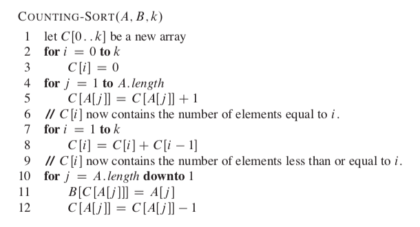
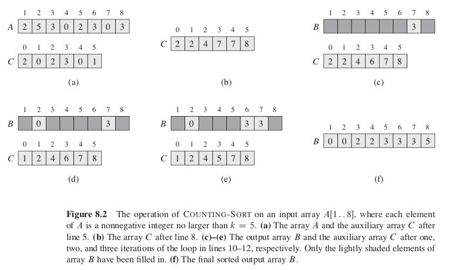
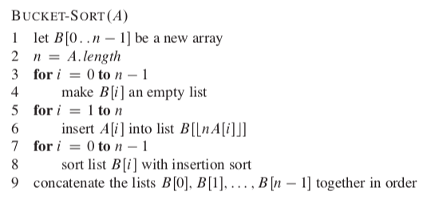
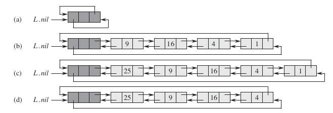
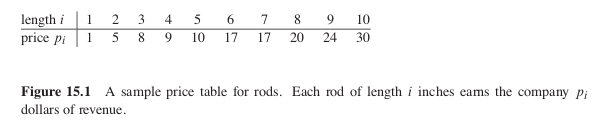
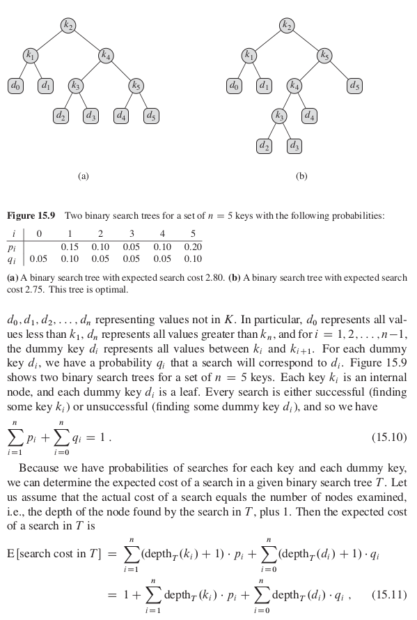
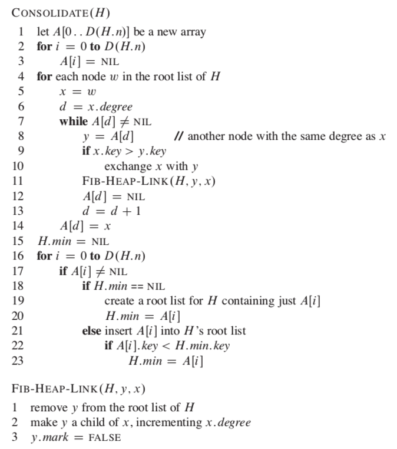
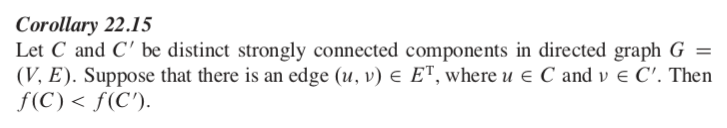
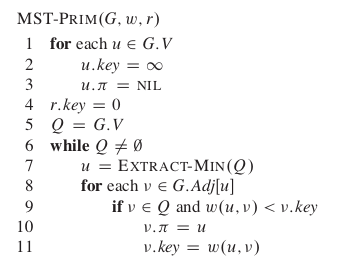
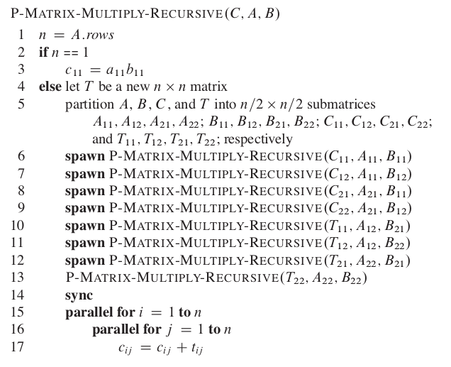

algorithm
Table of Contents
- 1. DONE Preface
- 2. DONE Foundations
- 2.1. The Role of Algorithms in Computing
- 2.1.1. what is algorithm?
- 2.1.2. instance of a problem
- 2.1.3. correct algorithms
- 2.1.4. problem list
- 2.1.5. two characteristics of many algorithms
- 2.1.6. data structure
- 2.1.7. the core technique
- 2.1.8. hard problems
- 2.1.9. NP-complete problem
- 2.1.10. algorithm efficiency
- 2.1.11. algorithms as a technology
- 2.2. Getting Started
- 2.3. Growth of Functions
- 2.4. Divide-and-Conquer
- 2.5. Probabilistic Analysis and Randomized Algorithms
- 2.1. The Role of Algorithms in Computing
- 3. Sorting and Order Statistics
- 4. Data Structures
- 5. Advanced Design and Analysis Techniques
- 6. Advanced Data Structure
- 7. Graph Algorithms
- 8. Selected Topics
1. DONE Preface
Algorithms lies at the heart of computering.
Website: http://mitpress.mit.edu/algorithms/
Psudocode: present algorithm clearly and succintly, without idiosyncrasies of a particular programming language obscuring the its essence.
2. DONE Foundations
2.1. The Role of Algorithms in Computing
2.1.1. what is algorithm?
input -> algorithm -> output
An algorithm is a sequence of computational steps that transform the input into the output.
An algorithm describes a specific computational procedure for achieving the input/output relationship.
2.1.2. instance of a problem
the input needed to compute a solution to the problem.
2.1.3. correct algorithms
For every input instance, it halts out the correct output.
2.1.4. problem list
- Internet, finding good routes and finding pages
- Electronic commerce, public-key cryptography and digital singatures
- oil company, where to place its wells in order to maximize its profit, linear programming
- road map, shortest route
- two ordered sequences, find a longest common subsequence
- a mechanical design, each part may include instances of other parts, to list the parts in order so that each part appears before any part that uses it, topological sorting
- convex hull
2.1.5. two characteristics of many algorithms
- There are many candidate solutions, but finding the one that solve or the one is best is challenge.
- They have practical applications.
2.1.6. data structure
a way to store and organize data in order to facilitate access and modifications.
No single data structure works well for all purposes, and it is important to know the strengths and limitations of several of them.
2.1.7. the core technique
learn the technique of algorithm design and analysis.
2.1.8. hard problems
Like the NP-complete problem, there are problem that has no efficient solutions.
Before you delve into the real problem, take a overview of it.
2.1.9. NP-complete problem
- no one knows whether or not efficient algorithms exist.
- a solution for one NP-complete probelm will works for all NP-complete problems
- several NP-complete problems are similar, but not identical to problems for which we do know of efficient algorithms.
2.1.10. algorithm efficiency
Computers are not infinitely fast and memory is not free, thus the efficiency of a algorithm matters.
2.1.11. algorithms as a technology
Algorithms are at the core of most technologies.
2.2. Getting Started
2.2.1. loop invariant
Loop invariant is used to help us to understand why an algorithm is correct.
The comparison of loop invariant and mathematical induction
| Loop Invariant | Mathematical Induction |
| initialization | base case |
| maintenance | inductive step |
| termination |
Initialization: It is true prior to the first iteration of the loop.
Maintanance: If it is true before an iteration of the loop, it remains true before the next iteration.
Termination: When the loop terminates, the invariant gives us a useful property that helps show that the algorithm is correct.
2.2.2. psudocode conventions
INSERTION-SORT(T)
for j = 2 to A.length
key = A[j]
// Insert A[j] into the sorted sequence A[1..j-1].
i = j - 1
while i > 0 and A[i] > key
// in place sort
A[i + 1] = A[i]
i = i - 1
// when the loop terminate, i = 0
A[i + 1] = key
- Indentation indicates block structures.
- A loop counter retains its value after exiting the loop. (deffer from C++, Java…)
- Variable are local to the given procedure.
- The keyword error indicates that an error occurred.
2.2.3. analyzing algorithms
analyzing an algorithm: predict the resources.
resources: time and space (memory, communication bandwidth, computer hardware, computational time…)
2.2.4. model
Before analyzing an algorithm, there must be a model to measure the resource cost.
2.2.5. algorithm vs RAM
The focus is algorithm, not the tedious hardware detail.
To yield a clear insight into algorithm design and analysis, RAM model is simplified.
2.2.6. RAM model
|
instructions |
arithmetic | movement | control |
each instructions takes a constant amount of time |
|
add, abstruct, multiply, divide, remainder, floor, ceiling |
load, store copy |
conditional and unconditional branch, subroutine call, return |
||
|
data types |
integer, floating |
represented by clgn bits |
||
| memory hierarchy | do not model caches or virtual memory | |||
\(c\lg n\) explaination:
- \(\lg\) means \(\log_2\)
- 2 as root because of the binary system
- \(c\ge1\) : each word can hold the value of n
- \(c\) to a constant: the word size does not grow arbitrarily
2.2.7. core idea in modeling
show the important characteristcs of algorithms and suppress the tedious details.
2.2.8. analysis of a algorithm
In general, the time grows with the size of the input,
so it is traditional to describe the running time as the function of the size of its input.
| Examples | ||
| input size | depends on the problem being studied | number of items, total number of bits ... |
| running time | the number of primitive operations |
Assumption for simpler analysis:
A constant amount of time is requried to execute each line of the pseudocode.
2.2.9. worst-case analysis
Becuase the behavior of an algorithm may be different for each possible input,
we need a means for summarizing that behavior in simple, easily understood formulas.
the reason to analyze worst-case running time:
- give an upper bound on the running time
- worst case ocurrs fairly often
- the "average case" is often roughly as bad as the worst case
2.2.10. abstraction
Use some simplifying abstraction to ease the analysis.
- ignore the actual cost of each statement, using the constants \(c_i\) to represent these costs.
- ignore the abstract costs \(c_i\) ( \(an^2 + bn + c\) )
- rate of growth or order of growth of the running time ( \(\Theta(n^2)\) ) (pronounced "theta of n-squared")
2.3. Growth of Functions
Althoght we can sometimes determine the exact running time of an algorithm, the extra procision is not usually worth the effort of computing it.
When we look at input sizes large enought to make only the order of growth of the running time relevant, we are studying the asymptotic efficiency of algorithms.
2.3.1. Asymptotic notation
- $Θ$-notation
\begin{equation} \Theta(g(n)) = \{f(n): \text{there exist positive constant}\ c_1, c_2 \text{and} \ n_0 \text{such that} \ 0 \le c_1 g(n) \le f(n) \le c_2 g(n)\ \text{for all} \ n \ge n_0 \} \end{equation}Because \(\Theta(g(n))\) is a set, we could write "\(f(n) \in \Theta(g(n))\) " to indicate that \(f(n)\) is a member of \(\Theta(g(n))\) . Instead, we will usually write "\(f(n) = \Theta(g(n))\) " to express the same notion.
Since any constant is a degree-0 polynomial, we can express any constant function as \(\Theta(n^0)\) , or \(\Theta(1)\) .
- O-notation
\begin{equation} O(g(n)) = \{f(n): \text{there exist positive constants} \ c \text{and} \ n_0 \ \text{such that} \ 0 \le f(n) \le cg(n) \ \text{for all} \ n \ge n_0 \} \end{equation}O-notation to the worst case ==> to every input
$Θ$-notation to the worst case =/=> to every input
- $Ω$-notation
\begin{equation} \Omega(g(n)) = \{f(n): \text{there exist positive constants} \ c \text{and} \ n_0 \ \text{such that} \ 0 \le cg(n) \le f(n) \ \text{for all} \ n \ge n_0 \} \end{equation} - Theorem
For any two functions \(f(n)\) and \(g(n)\), we have \(f(n) = \Theta(g(n))\) if and only if
\(f(n) = O(g(n))\) and \(f(n) = \Omega(g(n))\)
- o-notation
an upper bound that is not asymptotically tight.
\begin{equation} o(g(n)) = \{f(n): \text{for any positive constant} \ c > 0, \text{there exist a constant} \ n_0 > 0 \ \text{such that} \ 0 \le f(n) < cg(n) \ \text{for all} \ n \ge n_0 \} \end{equation}
or
\begin{equation} \lim_{n\rightarrow \infty}\frac{f(n)}{g(n)} = 0 \end{equation}
- $ω$-notation
a lower bound that is not asymptotically tight.
\begin{equation} \omega(g(n)) = \{f(n): \text{for any positive constant} \ c > 0, \text{there exist a constant} \ n_0 > 0 \ \text{such that} \ 0 \le cg(n) < f(n) \ \text{for all} \ n \ge n_0 \} \end{equation}
or
\begin{equation} \lim_{n\rightarrow \infty}\frac{f(n)}{g(n)} = \infty \end{equation}
- comparing functions
- Transitivity
\[ f(n) = \Theta(g(n)) \quad \text{and} \quad g(n) = \Theta(h(n)) \Rightarrow f(n) = \Theta(h(n)) \]
The same to \(O, \Omega, o, \omega\) .
- Reflexivity
\[f(n) = \Theta(f(n))\]
\[f(n) = O(f(n)) \]
\[f(n) = \Omega(f(n)) \]
- Symmetry
\[ f(n) = \Theta(g(n)) \quad \text{if and only if} \quad g(n) = \Theta(f(n)) \]
- Transpose symmetry
\[ f(n) = O(g(n)) \quad \text{if and only if} \quad g(n) = \Omega(f(n)) \]
\[ f(n) = o(g(n)) \quad \text{if and only if} \quad g(n) = \omega(f(n)) \]
- Transitivity
2.3.2. Standard notations and common functions
2.4. Divide-and-Conquer
A recurrence is an equation or inequality that describes a function in terms of its value on smaller inputs.
For example:
2.4.1. The master method for solving recurrences
where \(a\ge 1\) and \(b>1\) are constants and f(n) is an asymptotically positive function.
Then \(T(n)\) has the following asymptotic bounds:
- If \(f(n) = O(n^{\log_b(a-\epsilon)})\) for some constant \(\epsilon>0\), then \(T(n)=\Theta(n^{\log_ba})\).
- If \(f(n) = \Theta(n^{\log_ba})\), then \(T(n)=\Theta(n^{\log_ba}\lg n)\).
- If \(f(n) = O(n^{\log_b(a+\epsilon)})\) for some constant \(\epsilon>0\), and if \(af(n/b)\le cf(n)\) for some constant \(c<1\) and all sufficiently large \(n\), then \(T(n)=\Theta(f(n))\).
Intuitively, the larger of the two functions determines the solution to the recurrence.
Note:
Beyond this intuition, you need to be aware of some technicalities. In the first case, not only must \(f(n)\) be smaller than \(n^{\log_ba}\) , it must be polynomially smaller. In the third case, not only must \(f(n)\) be larger than \(n^{\log_ba}\) , it also must be polynomially larger and in addition satisfy the "regularity" condition that \(af(n/b)\le cf(n)\)
2.5. Probabilistic Analysis and Randomized Algorithms
Probabilistic analysis is the use of probability in the analysis of problems.
In order to perform a probabilistic analysis, we must use knowledge of, or make assumptions about, the distribution of the inputs. Then we analyze our algorithm, computing an average-case running time, where we take the average over the distribution of the possible inputs. Thus we are, in effect, averaging the running time over all possible inputs. When reporting such a running time, we will refer to it as the average-case running time.
we call an algorithm randomized if its behavior is determined not only by its input but also by values produced by a random-number generator.
In general, we discuss the average-case running time when the probability distribution is over the inputs to the algorithm, and we discuss the expected running time when the algorithm itself makes random choices.
2.5.1. Indicator random variables
In order to analyze many algorithms, we use indicator random variables. Indicator random variables provide a convenient method for converting between probabilities and expectations.
Suppose we are given a sample space S and an event A. Then the indicator random variable \(I\{A\}\) associated with event A is defined as
Lemma:
Given a sample space S and an event A in the sample space S, let \(X_A = I\{A\}\). Then \(E[X_A]=Pr\{A\}\).
2.5.2. Randomized alogrithms
Most of the time, we do not have knowledge in the input distribution. Instead of assuming a distribution of inputs, we impose a distribution.
3. Sorting and Order Statistics
sorting problem:
Input: A sequence of n numbers \(a_1, a_2, ..., a_n\).
Output: A permutation (reordering) \(a'_1,a_2',...,a_n'\) of the input sequence such that \(a_1' \le a_2' \le ... \le a_n'\).
In practice, the numbers to be sorted are rarely isolated values. Each is usually part of a collection of data called a record. Each record contains a key, which is the value to be sorted. The remainder of the record consists of satellite data, which are usually carried around with the key.
3.1. DONE Heapsort
3.1.1. Heaps
The (binary) heap data stucture is an array object that can view as nearly complete tree. Each node of the tree corresponds to an element of the array. The tree is completely filled on all levels except possibly the lowest, which is filled from the left up to a point.
An array A that represents a heap is an object with two attributes:
- A.length, which gives the number of elements in the array
- A.heap-size, which represents how many elements in the heap are stored with array A
There are two kinds of binary heaps: max-heaps and min-heaps. In both kinds, the values in the nodes satisfy a heap property.
In a max-heap, the max-heap property is that for every node i other than root, \(A[PARENT(i)] \ge A[i]\).
In a min-heap, \(A[PARENT(i)] \le A[i]\).
3.1.2. Maintaining the heap property
In order to maintain the max-heap property, we call the procedure MAX-HEAPIFY. Its inputs are an array A and an index i into the array. When it is called, MAX-HEAPIFY assumes that the binary trees rooted at LEFT(i) and RIGHT(i) are max-heaps, but that A[i] be smaller than its children, thus violating the max-heap property.

3.1.3. Building a heap
3.1.4. The heapsort algorithm
Similar bubble sort, but reducing the number of comparison.
3.1.5. Priority queues
A priority queue is a data structure for maintaining a set S of elements, each with an associated value called a key.
A max-priority queue supports the following operations:
- INSERT(S,x) inserts the elements x into the set S, which is equivalent to the operations \(S=S\cup \{x\}\).
- MAXIMUM(S) returns the element of S with the largest key.
- EXTRACT-MAX(S) removes and returns the element of S with the largest key.
- INCREASE-KEY(S,x,k) increase the value of element x's key to the new value k, which is assumed to be at least as large as x's current key value.
When we use a heap to implement a priority queue, therefore, we often need to store a handle to the corresponding application object in each heap element.
the insert key is first set to negative infinity in order to be able to increase the key (any key is greater than negative infinity)
3.2. Quicksort
3.3. Sorting in Linear Time
comparison sorts: the sorted order they determine is based only on comparison between the input elements.
Any comparison sort must make \(\Omega(n\lg n)\) comparisons in the worst case to sort n elements.
3.3.1. Counting sort
Counting sort assume that each of the input elements is a integer in the range 0 to k, for some integer k. When \(k=O(n)\), the sort runs in \(\Theta(n)\) time.


3.3.2. Radix sort
The following procedure assumes that each element in the n-element array A has d digits, where digit 1 is the lowest-order digit and d is the highest-order digit.
Given n d-digit numbers in which each digit can take on up to k possible values, RADIX-SORT correctly sorts these numbers in \(\Theta(d(n+k))\) time if the stable sort it uses takes \(\Theta(n+k)\) time.
3.3.3. Bucket sort
Bucket sort assumes that the input is generated by a random process that distributes elements uniformly and independently over the interval [0,1).
Bucket sort divides the interval [0,1) into n equal-sized subintervals, or buckets, and then distributes the n inputs elements into the buckets.

3.3.4. Medians and Order Statistics
The ith order statistic of a set of n elements is the ith smallest element. For example, the minimum of a set of elements is the first order statistics (i=1), and the maximum is the nth order statistics (i=n).
A median is the "halfway point" of the set. When n is odd, the median is unique, ocurring at \(i=(n+1)/2\). When n is even, there are two median, ocurring at \(i=\lfloor(n+1)/2\rfloor\) (the lower median) and \(i=\lceil(n+1)/2\rceil\)
4. Data Structures
In a typical implementation of a dynamic set, each element is represented by an object whose attributes can be examined and manipulated if we have a pointer to the object.
Operations on a dynamic set can be grouped into two categories: queries, which simply return information about the set, and modifying operations, which change the set.
SEARCH(S,k)
A query that, given a set S and a key value k, returns a pointer x to an element in S such that x.key = k, or NIL if on such element belongs to S.
INSERT(S,x)
A modifying operation that augements the set S with the element pointed to by x.
DELETE(S,x)
A modifying operation that, given a pointer x to an element in the set S, removes x from S.
MINIMUM(S)
A query on a totally ordered set S that returns a pointer to the element of S with the smallest key.
MAXIMUM(S)
A query on a totally ordered set S that returns a pointer to the element of S with the largest key.
SUCCESSOR(S,x)
A query that, given an element x whose key is from a totally ordered set S, returns a pointer to the next larger element in S, or NIL if x is the maximum element.
PREDECESSOR(S,x)
A query that, given an element x whose key is from a totally ordered set S, returns a pointer to the next smaller element in S, or NIL if x is the minimum element.
4.1. Elementary Data Structure
4.1.1. Stacks and queues
Stacks and queues are dynamic sets in which the element removed from the set by the DELETE operation is prespecified. In a stack, the element deleted from the set is the one most recently inserted: the stack implements a last-in, first-out, or LIFO, policy. Similarly, in a queue, the element deleted is always the one that has been in the set for the longest time: the queue implements a first-in, first-out, or FIFO, policy.
- Stacks
The INSERT operation on a stack is often called PUSH , and the DELETE operation, which does not take an element argument, is often called POP.
We can implement a stack of at most n elements with an array S[1..n]. The array has an attribute S.top that indexes the most recently inserted element. The stack consists of elements S[1..S.top], where S[ 1 ] is the element at the bottom of the stack and S[S.top] is the element at the top.
When S.top = 0, the stack contains no elements and is empty. If we attempt to pop an empty stack, we say the stack underflows. If S.top exceeds n, the stack overflows.
- Queues
We call the INSERT operation on a queue ENQUEUE , and we call the DELETE operation DEQUEUE.
The queue has a head and a tail. When an element is enqueued, it takes its place at the tail of the queue, takes a place at the end of the line. The element dequeued is always the one at the head of the queue.
4.1.2. Linked lists
A linked list is a data structure in which the objects are arranged in a linear order.
Unlike an array, however, in which the linear order is determined by the array indices, the order in a linked list is determined by a pointer in each object.
The code for LIST-DELETE would be simpler if we could ignore the boundary conditions at the head and the tail of the list:
A sentinel is a dummy object that allows us to simplify boundary conditions.

Sentinels rarely reduce the asymptotic time bounds of data structure operations, but they can reduce constant factors.
selection probelm:
Input: A set of n (distinct) numbers and an interger i, with \(1\le i\ge n\).
Output: The elements \(x \in A\) that is larger than exactly i-1 other elements of A.
- Minimum and maximum
MINIMUM(A) min = A[1] for i = 2 to A.length if min > A[i] min = A[i] return minMIN_MAX(A) # init the min and max and start index if A.lenght is odd min = A[1] max = A[1] start = 2 else if A[1] > A[2] min = A[2] max = A[1] else min = A[1] max = A[2] start = 3 for i = start to A.length by 2 if A[i] > A[i + 1] if A[i] > max max = A[i] if A[i + 1] < min min = A[i + 1] else if A[i + 1] > max max = A[i + 1] if A[i] < min min = A[i] return min, max - Selection in expected linear time
- Selection in worst-case linear time
4.1.3. Representing rooted trees
4.2. Hash Tables
Many applications require a dynamic set that supports only the dictionary operations INSERT, SEARCH, and DELETE.
Directly addressing into an ordinary array makes effective use of our ability to examine an arbitrary position in an array in O(1) time.
When the number of keys actually stored is small relative to the total number of possible keys, hash tables become an effective alternative to directly addressing an array, since a hash table typically uses an array of size proportional to the number of keys actually stored. Instead of using the key as an array index directly, the array index is computed from the key.
Hashing is an extremely effective and practicaltechnique: the basic dictionary operations require only O(1) time on the average.
4.2.1. Direct-address tables
Direct addressing is a simple technique that works well when the universe U of keys is reasonably small.
To represent the dynamic set, we use an array, or direct-address table, denoted by T[0..m-1], in which each position, or slot, corresponds to a key in the universe U.
4.2.2. Hash Tables
The downside of direct addressing is obvious:
- if the universe U is large, storing a table T of size |U| may be impractical, or even impossible.
- the set K of keys actually stored may be so small relative to U that most of the space allocated for T would be wasted.
When the set K of keys stored in a dictionary is much smaller than the universe U of all possible keys, a hash table reduces the storage requirement to \(\Theta(|K|)\) while maintains the benefit that searching for an element in the hash table still requires only O(1) time.
we use a hash function h to compute the slot from the key k.
- Collision resolution by chaining
In chaining, we place all the elements that hash to the same slot into the same linked list.
Given a hash table T with m slots that stores n elements, we define the load factor \(\alpha\) for T as n/m, that is, the average number of elements stored in a chain.
simple uniform hashing:
Any given element is equally likely to hash into any of the m slots, independently of where any other element has hashed to.
4.2.3. Hash Functions
A good hash function satisfies (approximately) the assumption of simple uniform hashing: each key is equally likely to hash to any of the m slots, independently of where any other key has hashed to.
In practice, we can often employ heuristic techniques to create a hash function that performs well.
A good approach derives the hash value in a way that we expect to be independent of any patterns that might exist in the data.
Most hash functions assume that the universe of keys is the set \(N={0,1,2,...}\) of natural numbers. Thus, if the keys are not natural numbers, we find a way to interpret them as natural numbers.
- The division method
h(k) = k mod m
m should not be a power of 2, since if m = 2^p , then h(k) is just the p lowest-order bits of k. A prime not too close to an exact power of 2 is often a good choice for m.
- The multiplication method
\(h(k) = \lfloor m(kA\ \mathbb{mod}\ 1) \rfloor\)
\(A \approx (\sqrt{5} - 1)/2\)
4.2.4. Open addressing
4.3. Binary Search Trees
4.3.1. What is a binary search tree?
A binary search tree is organized in a binary tree.
binary-search-tree property:
Lets \(x\) be the node in a binary search tree. If \(y\) is a node in the left subtree of \(x\), then \(x.key \le x.key\). If \(y\) is a node in the right subtree of \(x\), then \(y.key \ge x.key\).
The binary-search-tree property allows us to print out all the keys in a binary search tree in sorted order by a simple recursive algorithm, called an inorder tree walk. This algorithm is so named because it prints the key of the root of a subtree between printing the values in its left subtree and printing those in its right subtree.
If x is the root of an n-node subtree, then the call INODER-TREE-WALK(x) takes \(\Theta(n)\) time.
4.3.2. Querying a binary search time
SEARCH, MINIMUM, MAXIMUM, SUCCESSOR, PREDECESSOR run in O(h) time. (h is the height)
TREE-PREDECESSOR(x)
if x.left != NIL
return TREE-MINIMUM(x.left)
y = x.p
while y != NIL and x == y.left
x = y
y = y.p
return y
If a node in a binary search tree has two children, then its successor has no left child and its predecessor has no right child. (Ohterwise it will be successor or predecessor)
4.3.3. Insertion and deletion
INSERTION and DELETION run in O(h) time.
deletetion auxilary function:

4.4. Red-Black Trees
Red-black trees are one of many search-tree schemes that are "balanced" in order to guarantee that basic dynamic-set operations take \(O(\lg n)\) time in the worst case.
4.4.1. Properties of red-black trees
A red-black tree is a binary search tree with one extra bit of storage per node: its color, which can be either RED or BLACK . By constraining the node colors on any simple path from the root to a leaf, red-black trees ensure that no such path is more than twice as long as any other, so that the tree is approximately balanced.
Red-black properties: 1. Every node is either red or black. 2. The root is black. 3. Every leaf ( NIL ) is black. 4. If a node is red, then both its children are black. 5. For each node, all simple paths from the node to descendant leaves contain the same number of black nodes.
As a matter of convenience in dealing with boundary conditions in red-black tree code, we use a single sentinel to represent NIL. We use the sentinel so that we can treat a NIL child of a node x as an ordinary node whose parent is x.
black-height of the node: (denoted bh(x))
the number of black nodes on any simple path from, but not including, a node x down to a leaf
Lemma:
A red-black tree with n internal nodes has height at most \(2\lg(n+1)\).
4.4.2. Rotations
ratation: a local operation in a search tree that preserves the binary-search-tree property. (run in O(1) time)
4.4.3. Insertion

To understand how RB-INSERT-FIXUP works, we break the code into 3 major steps.
- determine the violations of the red-black properties
- examine the overall goal of the while loop
- explore each of the three cases
4.4.4. Deletion
y: as the node either removed from the tree or moved within the tree; x: moves into node y's original position; node y's color might change, the variable y-original-color stores y's color before any changes occur;
If y is red, the red-black properties still hold when y is removed or moved If node y was black, three problems may arise: 1. y had been the root and a red child of y because the new root (property 2 violated) 2. if both x and x.p are red (property 4 violated) 3. moving y within the tree causes any simple path that privously contained y to have one fewer black node (property 5 violated)
We can correct the violation of property 5 by saying that node x, now occupying ys original position, has an "extra" black. That is, if we add 1 to the count of black nodes on any simple path that contains x, then under this interpretation, property 5 holds. When we remove or move the black node y, we push its blackness onto node x. The problem is that now node x is neither red nor black, thereby violating property 1.
4.5. Augmenting Data Structures
4.5.1. Dynamic order statistics
An order-statistic tree T is simply a red-black tree with additional information stored in each node.

Besides the usual red-black tree attributes x.key, x.color, x.p, x.left, and x.right in a node x, we have another attribute, x.size. This attribute contains the number of (internal) nodes in the subtree rooted at x (including x itself), that is, the size of the subtree.
4.5.2. How to augment a data structure
We can break the process of augmenting a data structure into four steps:
- Choose an underlying data structure.
- Determine additional information to maintain in the underlying data structure.
- Verify that we can maintain the additional information for the basic modifying operations on the underlying data structure.
- Develop new operations.
As with any prescriptive design method, you should not blindly follow the steps in the order given. Most design work contains an element of trial and error, and progress on all steps usually proceeds in parallel. There is no point, for example, in determining additional information and developing new operations (steps 2 and 4) if we will not be able to maintain the additional information efficiently. Neverthe- less, this four-step method provides a good focus for your efforts in augmenting a data structure, and it is also a good way to organize the documentation of an augmented data structure.
Theroem (augmenting a red-black tree)
Let f be an attribute that augments a red-black tree T of n nodes, and suppose that the value of f for each node x depends on only the information in nodes x, x.left, and x.right, possibly including x.left.f and x.right.f. Then, we can maintain the values of f in all nodes of T during insertion and deletion without asymptotically affecting the O(lgn) performance of these operations.
4.5.3. Interval trees
A closed interval is an ordered pair of real numbers \([t_1, t_2]\) with \(t_1 \le t_2\) . The interval \([t_1, t_2]\) represents the set \(\{t \in \mathbb{R}: t_1 \le t \le t_2\}\).
Any two intervals \(i\) and \(i'\) satisfy the interval trichotomy; that is, exactly one of the following three properties holds:
- \(i\) and \(i'\) overlap
- \(i\) is to the left of \(i'\)
- \(i\) is to the right of \(i'\)
An interval tree is a red-black tree that maintains a dynamic set of elements, with each element x containing an interval x.int.
Interval trees support the following operations:
5. Advanced Design and Analysis Techniques
Dynamic programming typically applies to optimization problems in which we make a set of choices in order to arrive at an optimal solution. As we make each choice, subproblems of the same form often arise. Dynamic programming is effective when a given subproblem may arise from more than one partial set of choices; the key technique is to store the solution to each such subproblem in case it should reappear.
Greedy algorithms typically apply to optimization problems in which we make a set of choices in order to arrive at an optimal solution. The idea of a greedy algorithm is to make each choice in a locally optimal manner.
We use amortized analysis to analyze certain algorithms that perform a sequence of similar operations. Instead of bounding the cost of the sequence of operations by bounding the actual cost of each operation separately, an amortized analysis provides a bound on the actual cost of the entire sequence. One advantage of this approach is that although some operations might be expensive, many others might be cheap.
5.1. Dynamic Programming
Dynamic programming solves problems by combining the solutions to subproblems. ("programming" in this context refers to a tabular method, not to writing computer code.)
Dynamic programming applies when the subproblems overlap.
A dynamic programming algorithm solve each subproblem just once and then save its answer in a table, thereby avoiding the work of recomputing the answer every time is solves each subproblem.
We typically apply dynamic programming to optimization problems.
When developing a dynamic programming algorithm, we follow a sequence of four steps:
- characterize the structure of an optimal solution
- recursivly define the value of an optimal solution
- compute the value of an optimal solution, typically in a bottom-up fashion
- construct an optimal solution from computed information
5.1.1. Rod cutting
The rod-cutting problem:
Given a rod of length n inches and a table of price \(p_i\) for \(i=1,2,...,n\), determine the maximum revenue \(r_n\) obtainable by cutting up the rod and selling the pieces.
We can cut up a rod of length \(n\) in \(2^{n-1}\) different ways.

If an optimal solution cuts the rod into k pieces, for some \(1\le k \le n\), then an optimal decomposition
\(n = i_1 + i_2 + ... + i_k\)
of the rod into pieces of lengths \(i_1,i_2,...,i_k\) provides maximum corresponding revenue
\(r_n = p_{i_1} + p_{i_2} + ... + p_{i_k}\).
Frame the values \(r_n\) for \(n\ge 1\) in terms of optimal revenues from shorter rods:
To solve the original problem of size \(n\), we solve smaller problems of the same type, but of smaller sizes. The overall optimal solution incorporates optimal solution to the two related subproblems, maximizing revenue from each of those two pieces.
We say that the rod-cutting problem exhibits optimal substructure: optimal solutions to a problem incorporate optimal solutions to related subproblems, which we may solve independently.
In a related, but slightly simpler, way to arrange a recursive structure for the rod-cutting problem, we view a decomposition as consisting of a first piece of length \(i\) cut off the left-hand end, and then a right-hand remainder of length \(n-i\). Only the remainder, and not the first piece, may be further divided. We thus obtain the following simpler version:
In this formulation, an optimal solution embodies the solution to only one related subproblemthe remainderrather than two.
- Recursive top-down implementation
Why is CUT-ROD so inefficient? The problem is that CUT-ROD calls itself recursively over and over again with the same parameter values; it solves the same subproblems repeatedly.
- Using dynamic programming for optimal rod cutting
The dynamic-programming method works as follows. Having observed that a naive recursive solution is inefficient because it solves the same subproblems repeatedly, we arrange for each subproblem to be solved only once, saving its solution. Dynamic programming thus uses additional memory to save computation time; it serves an example of a time-memory trade-off. The savings may be dramatic: an exponential-time solution may be transformed into a polynomial-time solution. A dynamic-programming approach runs in polynomial time when the number of distinct subproblems involved is polynomial in the input size and we can solve each such subproblem in polynomial time.
There are usually two equivalent ways to implement a dynamic-programming approach:
- top-down with memoization
- bottom-up method
These two approaches yield algorithms with the same asymptotic running time, except in unusual circumstances where the top-down approach does not actually recurse to examine all possible subproblems. The bottom-up approach often has much better constant factors, since it has less overhead for procedure calls.

- top-down with memoization
- Reconstructing a solution
Our dynamic-programming solutions to the rod-cutting problem return the value of an optimal solution, but they do not return an actual solution: a list of piece sizes. We can extend the dynamic-programming approach to record not only the optimal value computed for each subproblem, but also a choice that led to the optimal value. With this information, we can readily print an optimal solution.
5.1.2. Matrix-chain multiplication
Given a sequence (chain) \(\{A_1,A_2,...,A_n\}\) of n matrices to be multiplied, and we wish to compute the product \(A_1A_2...A_n\)
matrix-chain multiplication problem:
given a chine \(\{A_1,A_2,...,A_n\}\) of n matrices, where for \(i=1,2,...,n\), matrix \(A_i\) has dimension \(p_{i-1}\times p_i\), fully parenthesize of the product \(A_1A_2...A_n\) in a way that minimize the number of scalar multiplication.
5.1.3. Elements of dynamic programming
When to apply dynamic programming?
When the problem has the two properties:
- optimal substructure
- overlapping subproblems
optimal substructure: If an optimal solution to the problem contains within it optimal solutions to subproblems.
Note: The subproblems should be independent.
overlapping subproblems: When a recursive algorithm revisits the same problem repeatedly, we say that the optimization problem has overlapping subproblems.
5.1.4. Longest Common Subsequence
Given a sequence \(X = [x_1, x_2, ..., x_m]\), another sequence \(Z = [z_1,z_2,...,z_k]\) is a subsequence of X if there exists a strictly increasing sequence \([i_1,i_2,...,i_k]\) of indices of X such that for all \(j = 1, 2, ..., k\), we have \(x_{i_j} = z_j\).
Given two sequences X and Y, we say that a sequence Z is a common subsequence of X and Y if Z is a subsequence of both X and Y.
In the longest-common-subsequence problem, we are given two sequences \(X = [x_1, x_2, ..., x_m]\) and \(Y = [y_1,y_2,...,y_n]\) and wish to find a maximum length common subsequence of X and Y.
This leads to the following solution:
5.1.5. Optimal binary search tress
Suppose that we are designing a program to translate text from English to French. For each occurrence of each English word in the text, we need to look up its French equivalent. We could perform these lookup operations by building a binary search tree with n English words as keys and their French equivalents as satellite data. We want words that occur frequently in the text to be placed nearer the root.

where

5.2. Greedy Algorithms
A greedy algorithm always make the choice that looks best at moment. That is, it makes a locally optimal choice in the hope that this choice will lead to globally optimal choice.
5.2.1. An activity-selection problem
We have a set \(S={a_1,a_2,...,a_n}\) of n proposed activities that wish to use a resource which can serve only one activity at a time. Each activity \(a_i\) has a start time \(s_i\) and a finish time \(f_i\), where \(0\le s_i < f_i < \infty\). Activitis \(a_i\) and \(a_j\) are compatible if the intervals \([s_i,f_i)\) and $[sj,fj) do not overlap. In the activity-selection problem, we wish to select a maximum-size subset of mutually compatible activitis.
Theorem
Consider any nonempty subproblem \(S_k\), and let \(a_m\) be an activity in \(S_k\) with the earliest finish time. Then \(a_m\) is included in some maximum-size subset of mutually compatible activity of \(S_k\).
5.2.2. Element of the greedy strategy
steps:
- Case the optimization problem as one in which we make a choice and are left with one subproblem to solve.
- Prove that there is always an optimal solution to the original problem that makes the greedy choice, so that the greedy choice is always safe.
- Demoenstrate optimal substructure by showing that, having madethe greedy choice, what remains is a subproblem with the property that if we combine an optimal solution with the greedy choice we have made, we arrive an optimal solution to the original problem.
greedy-choice proerty:
we can assemble a globally optimal solution by making locally optimal (greedy) choices.
5.2.3. Huffman codes
the problem of designing a binary character code in which each character is represented by a unique binary string, which we call a codeword.
prefix-free code (prefix code):
no codeword is also a prefix of some other codeword.
Encodeing is always simple for any binary character code: we just concatenate the codewords representing each character of the file.
Prefix codes are desirable becuase they simplify decoding. The decoding process needs a convenient representation for the prefix code so that we can easily pick off the inital codeword. A binary tree whose leaves are the given characters provides one such representation. We interpret the binary codeword for a character as the simple path from the root to the character.
Huffman invented a greedy algorithm that constructs an optimal prefix code called a Huffman code.
Lemma
Let C be an alphabet in which each character \(c\in C\) has frequency \(c.freq\). Let x and y be two characters in C having the lowest frequencies. Then there exists an optimal prefix code for C in which the codewords for x and y have the same length and differ only in the last bit.
Lemma
Let C be a given alphabet with frequency \(c.freq\) defined for each character \(c\in C\). Let x and y be two characters in C with minimum frequency. Let \(C'\) be the alphabet C with the characters x and y removed and a new character z added, so that \(C' = C - \{x,y\} \cup \{z\}\). Define f for C' as for C, except that \(z.freq = x.freq + y.freq\). Let T' be any tree representing an optimal prefix code for the alphabet C'. The the tree T, obtained from T' by replacing the leaf node for z with an internal node having x and y as children, represents an optimal prefix code for the alphabet C.
5.3. Amortized Analysis
In an amortized analysis, we average the time required to perform a sequence of data-structure operations over all the operations performed. Amortized analysis differs from average-case analysis in that probability is not involved; an amortized analysis guarantees the average performance of each operation in the worst case.
The core is that: the individual operation is not independent in the algorithm analysis.
5.3.1. Aggregate analysis
In aggregate analysis, we show that for all \(n\), a sequence of n operations takes worst-case time \(T(n)\) in total. In the worst case, the average cost, or amortized cost, per operation is therefore \(T(n)/n\). Note that this amortized cost applies to each operation, even when there are several types of operations in the sequence.
5.3.2. The accounting method
In the accounting method of amortized analysis, we assign differing charges to different operations, with some operations charged more or less than they actually cost. We call the amount we charge an operation its amortized cost. When an operations amortized cost exceeds its actual cost, we assign the difference to specific objects in the data structure as credit. Credit can help pay for later operations whose amortized cost is less than their actual cost.
We must choose the amortized costs of operations carefully. If we want to show that in the worst case the average cost per operation is small by analyzing with amortized costs, we must ensure that the total amortized cost of a sequence of operations provides an upper bound on the total actual cost of the sequence.
5.3.3. The potential method
The potential method of amortized analysis represents the prepaid work as "potential energy" or just "potential", which can be released to pay for future operations.
where \(c_i\) is the acutual cost of the ith opration, \(D_i\) is the data structure that results after applying the ith operation to data structure \(D_{i-1}\), \(\hat{c_i}\) is the amortized cost of the ith operation.
5.3.4. Dynamic tables
- Table expansion
\begin{equation} c_i = \begin{cases} i \quad \mbox{if}\ i-1 \ \mbox{is an exact power of 2}. \\ 1 \quad \mbox{otherwise}. \end{cases} \end{equation} \begin{equation} \Phi(T)= \begin{cases} 2\cdot T.num - T.size \quad & \mbox{if}\ \alpha(T) \ge 1/2. \\ T.size/2 - T.num & \mbox{if}\ \alpha(T) < 1/2. \end{cases} \end{equation}
where \(\Phi\) is the potential function, T is an object representing the table, T.num contains the number of items in the table, T.size gives the total number of slots in the table, and \(\alpha\) is the load factor.
6. Advanced Data Structure
6.1. B-Tree
We have red-black tree already, so why we design B-tree?
The point is the huge gap in read/write speed between primary memory (or main memory) and secondary storage.
The primary memory normally consists of silicon memory chips. The secondary storage bases on magnetic disks. The spedd of main memory is about \(10^5\) times faster than that of secondary storage.
In order to amortize the time spent waiting for mechanical movements, disks access not just one item but several at a time. Information is divided into a number of equal-sized pages of bits that appear consecutively within tracks, and each disk read or write is of one or more entire pages.
6.1.1. Definition of B-trees
Theorem
6.1.2. Basic operation on B-trees
x is the pointer to a node, k is the key needed to be searched for.
ALLOCATE-NODE allocates one disk page to be used as a new node in O.1/ time.
NOTE: There is a bug the line 11, 12, 14, 15, that is the case of x.n = 0. There should be a if condition of x.n > 0.
6.1.3. Deleting a key from B-tree
The procedure B-TREE-DELETE deletes the key k from the subtree rooted at x. We design this procedure to guarantee that whenever it calls itself recursively on a node x, the number of keys in x is at least the minimum degree t. Note that this condition requires one more key than the minimum required by the usual B-tree conditions, so that sometimes a key may have to be moved into a child node before recursion descends to that child. This strengthened condition allows us to delete a key from the tree in one downward pass without having to "back up".

6.2. Fibonacci Heaps
The Fibonacci heap data structure serves a dual purpose. First, it supports a set of operations that constitutes what is known as a "mergeable heap". Second, several Fibonacci-heap operations run in constant amortized time, which makes this data structure well suited for applications that invoke these operations frequently.
If UNION operation is not needed, ordinary binary heaps work fairly well. (The above running in Fibonacci heaps are amortized time bounds)
Fibonacci heaps in theory and practice
From a theoretical standpoint, Fibonacci heaps are especially desirable when the number of EXTRACT-MIN and D ELETE operations is small relative to the number of other operations performed. From a practical point of view, however, the constant factors and programming complexity of Fibonacci heaps make them less desirable than ordinary binary (or k-ary) heaps for most applications, except for certain applications that manage large amounts of data.
6.2.1. Structure of Fibonacci heaps
- A Fibonacci heap is a collection of rooted trees that are min-heap ordered.
- Each node x contains a pointer x.p to its parent and a pointer x.child to any one of its children.
- The children of x are linked together in a circular, doubly linked list, which we call the child list of x.
Circular, doubly linked lists have two advantages for use in Fibonacci heaps:
- we can insert a node into any location or remove a node from anywhere in a circular, doubly linked list in O(1) time.
- given two such lists, we can concatenate them (or "splice" them together) into one circular, doubly linked list in O(1) time.
- \(x.degree\): the number of childern in the child list of node x
- \(x.mark\): indicates whether node x has lost a child since the last time \(x\) was made the child of another node.
- \(x.left\): point to the left siblings in the child list
- \(x.right\): point to the right siblings in the child list
- \(H.n\): the number of nodes currently in \(H\)
- Potential function
For a given Fibonacci heap H,
\begin{equation} \Phi(H)=t(H)+2m(H). \end{equation}
where \(t(H)\) is the number of trees in the root list of H, \(m(H)\) is the number of marked nodes in H.
The boolean-valued attribute x:mark indicates whether node x has lost a child since the last time x was made the child of another node. The roots of all the trees in a Fibonacci heap are linked together using their left and right pointers into a circular, doubly linked list called the root list of the Fibonacci heap.
6.2.2. Mergeable-heap-operations
- Inserting a node
- Uniting two Fibonacci heaps
- Extracting the minimum node
If z is NIL, then Fibonacci heap H is already empty and we are done. If z is its own right sibling after line 6,then z was the only node on the root list and it had no children.
Consolidating the root list consists of repeatedly executing the following steps until every root in the root list has a distinct degree value:
- Find two roots \(x\) and \(y\) in the root list with the same degree. Without loss of generality, let \(x.key \le y.key\).
- Link \(y\) to \(x\): remove \(y\) from the root list, and make \(y\) a child of \(x\) by calling the FIB-HEAP-LINK procedure. This procedure increments the attribute \(x.degree\) and clears the mark on y.

- Find two roots \(x\) and \(y\) in the root list with the same degree. Without loss of generality, let \(x.key \le y.key\).
6.3. van Emde Boas Tress
In the data structures like binary heaps, red-black trees, Fibonacci heaps, at least one important operation took \(O(\lg n)\) time, either worst case or amortized.
Beacuse each of these data structures based tis decisions on comparing keys, leading to the \(\Omega(\lg n)\) limitation (on time).
We can use addtional information (or limitation on information) to circumvent this limitation (on time).
6.3.1. Preliminary approaches
- Direct addressing
To store a dynamic set of values from the universe \(\{0,1,2,...,u-1\}\), we maintain an array \(A[0..u-1]\) of \(u\) bits.
INSERT, DELETE, and MEMBER operations in \(O(1)\) time.
MINIMUM, MAXIMUM, SUCCESSOR, and PREDECESSOR in \(\Omega(u)\) time in the worst case.
- Superimposing a binary tree structure
In the figure, each interval node contains a 1 if and only if any leaf in its subtree contains a 1.
In other words, the ibt stored in an internal node is the logical-or of its two-children.
Resulting in \(O(\lg n)\) time.
- Superimpose a tree of constant height
\begin{equation} u=2^{2k} \end{equation}
We impose a tree of degree \(\sqrt{u}\).
\(summary[i]\) contains a 1 if and only if the subarray \(A[i\sqrt{u}..(i+1)\sqrt{u}-1]\) contains a 1.
We call this $\sqrt{u}$-bit subarray of A the ith cluster.
Resulting in \(O(\sqrt{u})\) time.
6.3.2. A recursive structure
For simplicity, we assume that \(u=2^{2^k}\) for some integer \(k\).
Consider the recurrence:
The above equation has the solutionn \(T(u)=O(\lg\lg u)\).
We have identity \(x=index(high(x), low(x))\).
- Proto van Emde Boas structures
For the universe \(\{0,1,2,...,u-1\}\), we define a proto van Emde Boas structure, or proto-vEB structure.
Each proto-vEB(u) structure contains an attribute \(u\) giving its universe size.
In addition, it contains the following:
- Operations on a proto van Emde Boas structure
- Determining whether a value is in the set
\(O(\lg \lg u)\)
- Finding the minimum element
Although querying the summary information allows us to quickly find the cluster containing the minimum element, because this procedure makes two recursive calls on \(proto-vEB(\sqrt{u})\) structures,
it does not run in \(O(\lg\lg u)\) time in the worst case. (\(\Theta(\lg u)\) instead)
- Finding the successor
\(\Theta(\lg u \lg\lg u)\)
- Inserting an element
\(\Theta(\lg u)\)
- Deleting an element
PROTO-vEB-DELETE(V,x) if V.u == 2 V.A[x] = 0 else PROTO-vEB-DELETE(V.cluster[high(x)], low(x)) if V.cluster[high(x)] are all 0 PROTO-vEB-DELETE(V.summary, high(x))
- Determining whether a value is in the set
6.3.3. The van Emde Boas tree
The proto-vEB structure is close to what we need to achieve \(O(\lg\lg u)\) running times.
It falls short because we have to recurse too many times in most the operations.
We need to design a data structure that is similar to the proto-vEB structure but stores a little more information, thereby removing the need for the recursion.
If u is an odd power of 2 (\(u=2^{2k+1}\) for some integer \(k\ge 0)\) – then we will divide the \(\lg u\) bits of a number into the most significant \(\lceil(\lg u)/2 \rceil\) bits and the least significant \(\lfloor (\lg u)/2 \rfloor\) bits.
For convenience, we denote \(2^{\lceil (\lg u)/2 \rceil}\) by \(\sqrt[\uparrow]{u}\) and \(2^{\lfloor(\lg u)/2 \rfloor}\) by \(\sqrt[\downarrow]{u}\).
- van Emde Boas trees
A vEB tree contains two attributes not found in a proto-vEB structure:
minstores the minimum element in the vEB treemaxstores the maximum element in the vEB tree
The min and max attributes will turn out to be key to reducing the number of recursive calls within the operation on vEB trees.
- The MINIMUM and MAXIMUM operations do not even need to recurse, for they can just return the values of min or max.
- The SUCCESSOR operation can avoid making recursive call to determine whether the seccessor of a value x lies within high(x). That is becuase x's successor lies within its cluster if and only if x is strictly less than the max attribute of its cluster. A symmetric argument holds for PREDECESSOR and min.
- We can tell whether a vEB tree has no elements, exactly one element, or at least two elements in constant time from its min and max values.
- If we know that a vEB tree is empty, we can insert an element into it by updating only its min and max attributes.
Before using a van Emde Boas tree, we must know the universe size \(u\), so that we can create a van Emde Boas tree of the appropriate size that initially represents an empty set.
The total space requirement of a van Emde Boas tree is \(O(u)\), and it is straightforward to create an empty tree in \(O(u)\) time.
Therefore, we might not want to use a van Emde Boas tree when we perform only a small number of operations, since the time to create the data structure would exceed the time saved in the individual operations.
- Operations on a van Emde Boas tree
- Finding the minimum and maximum elements
vEB-TREE-MINIMUM(V) return V.minvEB-TREE-MAXIMUM(V) return V.max - Determining whether a value is in the set
vEB-TREE-MEMBER(V,x) if x == V.min or x == V.max return TRUE elseif V.u == 2 return FALSE # a vEB(2) tree has no elements other than those in min and max, if it is the base case, return FALSE else return vEB-TREE-MEMBER(V.cluster[high(x)],low(x)) - Finding the successor and predecessor
Comparing to proto-vEB, we can access the maximum value in a vEB tree quickly, we can avoid making two recursive calls, and instead make one recursive call on either a cluster or on the summary, but not on both.
line 1-4: find the successor of 0 and 1 is in the 2-element set or not line 5: whether x is strictly less than the minimum element. line 6: to determine whether the successor is in x's cluster
line 13-14: if x's predecessor is the minimum value in vEB tree, then the predecessor resides in no cluster at all.
- Inserting an element
The VEB-TREE-INSERT procedure will make only one recursive call. How can we get away with just one?
When we insert an element, either the cluster that it goes into already has another element or it does not.
If the cluster already has another element, then the cluster number is already in the summary, and so we do not need to make that recursive call.
If the cluster does not already have another element, then the element being inserted becomes the only element in the cluster, and we do not need to recurse to insert an element into an empty vEB tree.
line 3: if x < min, then x needs to become the new min line 4: we don't want to lose the original min, so we need to insert it into one of V's clusters
line 1: the tree contains only one element line 4: test if it is the base case line 9-22: assume that V has two or more elements and that u >= 4 line 9: because the min is not stored in cluster, if x == V.min, the other element should be the new min and this element should be deleted from the cluster. line 13: the cluster is empty line 18: all of V's clusters are empty, then the onlyy ramaining element in V is min line 21: x's cluster did not become empty due to x being deleted
- Finding the minimum and maximum elements
6.4. Data Structure for Disjoint Sets
6.4.1. Disjoint-set operations
A disjoint-set data structure maintains a collection \(\mathbb{S}=\{S_1,S_2,...,S_k\}\) of disjoint dynamic sets.
We identify each set by a representative, which is some member of the set.
wanted operations:
- MAKE-SET(x) creates a new set whose only member is x.
- UNION(x,y) unites the dynamic sets that contains x and y, say \(S_x\) and \(S_y\), into a new set that is the union of these two sets.
- FIND-SET(x) returns a pointer to the representative of the (unique) set containing x.
n: the number of MAKE-SET operations m: the total number of MAKE-SET, UNION, and FIND-SET operations
- An aaplication of disjoint-set data structures
One of the many applications of disjoint-set data structures arises in determining the connected components of an undirected graph.
In an actual implementation of this connected-components algorithm, the repre- sentations of the graph and the disjoint-set data structure would need to reference each other. That is, an object representing a vertex would contain a pointer to the corresponding disjoint-set object, and vice versa.
6.4.2. Linked-list representation of disjoint sets

With this linked-list representation, both MAKE-SET and FIND-SET are easy, requiring O(1) time.
- A simple implementation of union
Just append x's list to y's list, ignoring which set is longer.
We use the tail pointer for xs list to quickly find where to append ys list.
- A weighted-union heuristic
Suppose each list also includes the length of the list and that we always append the shorter list onto the longer, breaking ties arbitrarily.
With this simple weighted-union heuristic, a single UNION operation can still take \(\Omega(n)\) time if both sets have \(\Omega(n)\) members.
Theorem 21.1
Using the linked-list representation of disjoint sets and the weighted-union heuristic, a sequence of \(m\) MAKE-SET, UNION, and FIND-SET operations, \(n\) of which are MAKE-SET operations, take \(O(m+n\lg n)\) time.
6.4.3. Disjoint-set forests
In a disjoint-set forest, we represent sets by rooted trees, with each node containing one memeber and each tree representing one set.
We perform a FIND-SET operation by following parent pointers until we find the root of the tree. The nodes visited on this simple path toward the root consitute the find path.
- Heuristic to improve the running time
A sequence of \(n-1\) UNION operations may create a tree that is just a linear chain of \(n\) nodes. By using two heuristics, however, we can achieve a running time that is almost linear in the total number of operations \(m\).
heuristics:
- union by rank
- make the root of the tree with fewer nodes point to the root of the tree with more nodes.
- path compression
- during FIND-SET operations, make each node on the find path point directly to the root.
For each node, we maintain a rank, which is a upper bound on the height of the node. Pat compression does not change any ranks.
- Pseudocode for disjoint-set forests
MAKE-SET(x) x.p = x x.rank = 0
UNION(x,y) LINK(FIND-SET(x), FIND-SET(y)) LINK(x,y) if x.rank > y.rank y.p = x else x.p = y # this idea if x.rank == y.rank y.rank = y.rank + 1FIND-SET(x) if x != x.p x.p = FIND-SET(x.p) return x.p - Effect of the heuristics on the running time
Separately, either union by rank or path compression improves the running time of the operations on disjoint-set forests, and the improvement is even greater when we use the two heuristics together.
When we use both union by rank and path compression, the worst-case running time is \(O(m\alpha(n)\), where \(\alpha(n)\) is a very slowly growing function.
In any conceivable application of a disjoint-set data structure, \(\alpha(n) \le 4\); thus, we can view the running time as linear in \(m\) in all practical situations.
7. Graph Algorithms
7.1. Elementary Graph Algorithms
Keys:
- representing a graph
- searching a graph
Searching a graph meas systematically following the edges of the graph so as to visit the vertices of the graph.
7.1.1. Representations of graphs
Two standard ways to represent a graph \(G=(V,E)\) :
- a collection of adjacency lists (for sparse graph)
- an adjacency matrix (dense graph or tell quickly if there is an edge connecting two given vertices.
The adjacency-list representation of a graph \(G=(V,E)\) consists of an array of adjacency of |V| lists, one for each vertex in V.
For the adjacency-matrix representation of a graph \(G=(V,E)\), we assume that the vertices are numbered 1,2,…,|V| in some arbitary manner. The the adjacency-matrix representation consists of a \(|V| \times |V|\) matrix \(A=(a_{ij})\) such that
7.1.2. Breadth-first search
Breadth-first search is one of the simplest algorithms for searching a graph and the archetype for many important graph algorithms.
Given a graph \(G=(V,E)\) and a distringuished source vertex s, breadth-first search systematically explores the edges of G to "discover" every vertex that is reachable from s.
Breadth-first search is so named because it expands the frontier between discovered and undiscovered vertices uniformly across the breadth of the frontier. That is, the algorithm discovers all vertices at distance k from s before discovering any vertices at distance k+1.
To keep track of progress, breadth-first search colors each vertex white, gray, or black. All vertices start out white and may later become gray and then black. A vertex is discovered the first time it is encountered during the search, at which time it becomes nonwhite. Gray and black vertices, therefore, have been discovered, but breadth-first search distinguishes between them to ensure that the search proceeds in a breadth-first manner. If \((u,v) \in E\) and vertex u is black, then vertex v is either gray or black; that is, all vertices adjacent to black vertices have been discovered. Gray vertices may have some adjacent white vertices; they represent the frontier between discovered and undiscovered vertices.
1. the input graph is represented using adjacent lists. 2. u.color represents the color of the vertex u 3. u.pi represents the predecessor of u 4. u.d represents the distance from the source s to vertex u
- Analysis
The running of BFS is O(V+E).
- Shortest paths
Define the shortest-path distance \(\delta(s,v)\) from s to v as the minimum number of edges in any path from the vectex s to vectex v; if there is no path from s to v, the \(\delta(s,v)=\infty\) . We call a path of length \(\delta(s,v)\) from s to v a shortest path from s to v.
Lemmas:
- Breadth-first trees
The procedure BFS builds a breadth-first tree as it searches the graph. The tree corresponds to the \(\pi\) attributes.
For a graph \(G=(V,E)\) with source s, we define the predecessor subgraph of G as \(G_\pi=(V_\pi,E_\pi)\), where
\begin{equation} V_\pi=\{v\in V: v.\pi \ne NIL\} \cup \{s\} \end{equation}
and
\begin{equation} E_\pi=\{(v.\pi,v): v \in V_\pi - \{s\}\} \end{equation}
The predecessor subgraph \(G_\pi\) is a breadth-first tree if \(V_\pi\) consists of the vertices reachable from s and, for all \(v\in V_\pi\), the subgraph \(G_\pi\) contains a unique simple path from s to v that is also a shortest path from s to v in G.
7.1.3. Depth-first search
Each vertex is initially white, is grayed when it is discovered in the search, and is blackened when it is finished. Depth-first search timestamps each vertex. Each vertex vhas two timestamps: the first timestamp v.d records when v is first discovered (and grayed), and the second timestamp v.f records when the search finishes examining vs adjacency list (and blackens v). The variable time is a global variable for timestamping.
The result of depth-first search may depend upon the order in which lien 5 of DFS examines the vertices and upon the order in which line 4 of DFS-VISIT visits the neighbors of a vertex.
The predecessor subgraph produced by a depth-first search may be composed of several trees. Therefore, we define the predecessor subgraph as follows:
where
The predecessor subgraph of a depth-first search forms a depth-first forest comprising several depth-first trees. The edges in \(E_\pi\) are tree edges.
The running time of DFS is \(\Theta(V+E)\).
- Properties of depth-first search
Depth-first search yields valuable information about the structure of a graph.
(?)
Perhaps the most basic property of depth-first search is that the predecessor subgraph \(G_\pi\) does indeed form a forest of trees, since the structure of the depth-first trees exactly mirrors the structure of recursive calls of DFS-VISIT.
Another important property of depth-first search is that discovery and finishing times have parenthesis structure. If we represent the discovery of vertex u with a left parenthesis (u and represent its finishing by a right parenthesis u), then the history of discoveries and finishings makes a well-formed expression in the sense that the parentheses are properly nested.
- Classification of edges
Another interesting property of depth-first search is that the search can be used to classify the edges of the input graph $ G=(V,E)$. The type of each edge can provide important information about a graph.
7.1.4. Topological sort
Directed acyclic graph is sometime called "dag".
A topological sort of a dag \(G=(V,E)\) is a linear ordering of all its vertices such that if G contains an edge \((u,v)\), then u appears before v in the ordering.
TOPOLOGICAL-SORT(G) 1 call DFS(G) to compute finishing times v.f for each vectex v 2 as each vertex is finished, insert it into onto the front of a linked list 3 return the linked list of vertices
The running time of TOPOLOGICAL-SORT is \(\Theta(V+E)\).
Lemma
A directed graph G is a acyclic if and only if a depth-first search of G yields no back edges.
Lemma
TOPOLOGICAL-SORT produces a topological sort of the directed acyclic graph provided as its input.
7.1.5. Strongly connected components
Strongly connected component of a directed graph \(G=(V,E)\) is a maximal set of vertices \(C\subseteq V\) such that for every pair of vertices u and v in C, we have both \(u\leadsto v\) and \(v\leadsto u\); that is, vertices u and v are reachable from each other.

7.2. Minimum Spanning Tress
Given a connected, undirected graph \(G=(V,E)\). For each edge \((u,v) \in E\), there is a weight \(w(u,v)\) specifying the cost to connect \(u\) and \(v\). We wish to find an acyclic subset \(T \subseteq E\) that connects all the vertices and whose total weight
\[w(T) = \sum_{(u,v) \in T} w(u,v)\]
is minimized. Since T is acyclic and connects all the vertices, it must form a tree, which we call a spanning tree since it "spance" the graph G.
7.2.1. Growing a minimum spanning tree
The two algorithms we consider here use a greedy approach to the problem, although they differ in how they apply this approach.
The greedy strategy is captured by the following generic method, which grows the minimum spanning tree one edge at a time. The generic method manages a set of edges A, maintaining the following loop invariant:
Prior to each iteration, A is a subset of some minimum spanning tree.
At each step, we determine an edge \((u,v)\) we can add to A without violating this invariant, in the sense that \(A\cup \{(u,v)\}\) is also a subset of a minimum spanning tree. We call such an edge a safe edge for A, since we can add it safely to A while maintaining the invariant.
Some definitions:

A cut \((S,V-S)\) of an undirected graph \(G=(V,E)\) is a partition of \(V\).
An edge \((u,v) \in E\) crosses the cut \((S,V-S)\) if one of its endpoints is in \(S\) and the other is in \(V-S\).
A cut respects a set \(A\) of edges if on edge in \(A\) crosses the cut.
An edge is a light edge crossing a cut if its weight is the minimum of any edge corssing the cut.
7.2.2. The algorithms of Kruskal and Prim
- Kruskal's algorithm
Kruskal's algorithm qualifies as a greedy algorithm becuase at each step it adds to the forest an edge of least possible weight.
- Prim's algorithm
This strategy qualifies as greedy since at each step it adds to the tree an edge that contributes the minim amount possible to the tree's weight.

During execution of the algorithm, all vertices that are not in the tree reside in a min-priority queue Q based on a key attribute. For each vertex v, the attribute v.key is the minimum weight of any edge connecting v to a vertex in the tree; by convention, \(v.key = \infty\) if there is no such edge.
7.3. Single-Source Shortest Paths
In a shortest-paths problem, we are given a weighted, directed graph \(G=(V,E)\), with weight function \(w: E \rightarrow \mathbb{R}\) mapping edges to real-valued weights. The weight \(w(p)\) of path \(p=\langle v_0,v_1,\dots,v_k \rangle\) is the sum of the weights of its consituent edges:
We define the shortest-path weight \(\delta(u,v)\) from \(u\) to \(v\) by
A shortest path from vertex \(u\) to vertex \(v\) is then defined as any path \(p\) with weight \(w(p)=\delta(u,v)\)
- Optimal substructure of a shortest path
Shortest-paths algorithms typically rely on the property that a shortest path between two vertices contains other shortest paths within it.
- Negative-weight edges
If there is a nagative-weight cycle on some path from \(s\) to \(v\), we define \(\delta(s,v)=-\infty\).
- Cycles
We can assume that when we are finding shortest paths, they have no cycles, i.e., they are simple paths. (only 0-weight cycles are possible)
Since any acyclic path in a graph \(G=(V,E)\) contains at most \(|V|\) distinct vertices, it also contains at most \(|V|-1\) edges. Thus, we can restrict our attention to shortest paths of at most \(|V|-1\) edges.
- Representing shortest paths
A shortest-paths tree rooted at \(s\) is a directed subgraph \(G'=(V',E')\), where \(V' \subseteq V\) and \(E' \subseteq E\), such that
- \(V'\) is the set of vertices reachable from \(s\) in \(G\)
- \(G'\) forms a rooted tree with root \(s\), and
- for all \(v \in V'\), the unique simple path from \(s\) to \(v\) in \(G'\) is a shortest path from \(s\) to \(v\) in \(G\).
Shortest paths are not necessarily unique, and neighter are shortest-paths trees.
- \(V'\) is the set of vertices reachable from \(s\) in \(G\)
- Relaxation
For each vertex \(v \in V\), we maintain an attribute \(v.d\), which is an upper bound on the weight of a shortest path from source \(s\) to \(v\). We call \(v.d\) a shortest-path estimate.
The process of relaxing an edge \((u,v)\) consists of testing whether we can improve the shortest path to \(v\) found so far by going through \(u\) and, if so, updating \(v.d\) and \(v.\pi\)
Relaxation is the only means by which shortest-path estimates and predecessors change.
- Properties of shortest paths and relaxation
7.3.1. The Bellman-Ford algorithm
The running time is O(VE).
7.3.2. Single-source shortest paths in directed acyclic graphs
The running time is \(\Theta(V+E)\).
7.3.3. Dijkstra's algorithm
Situation: all edge weights are nonnegative.
The running time of Dijkstras algorithm depends on how we implement the min-priority queue.
7.3.4. Difference constraints and shortest paths
7.4. All-Pair Shortest Paths
For convenience, we assume that the vertices are numbered \(1,2,...,|V|\), so that the input is an \(n\times n\) matrix \(W\) representing the edge weights of an n-vertex directed graph \(G=(V,E)\).
That is, \(W=(w_{ij})\), where
To solve the all pairs shortest-path problem on an input adjacency matrix, we need to compute not only the shortest-path weights but also a predecssor matrix \(\Pi=(\pi_{ij})\), where \(\pi_{ij}\) is the NIL if either \(i=j\) or there is on path from i to j, and otherwise \(\pi_ij\) is the predecessor of j on some shortest path from i.
For each vertex \(i\in V\), we define the predecessor subgraph of G for i as \(G_{\pi,i} = (V_{\pi,i},E_{\pi,i})\), where
and
7.4.1. Shortest paths and matrix multiplication
This part shows a dynamic-programming algorithm for the all-pair shortest-path problem.
- The structure of the shortest path
From the perspective the the edge: (all subpaths of a shortest path are shortest paths.)
\begin{equation} \delta(i,j)=\delta(i,k) + w_{wj} \end{equation}
In order to compute the shortest path containing m edges, compute the shortest path containing m-1 edges first.
Then
- A recursive solution to the all-pair shortest-paths problem
Let \(l_{ij}^{(m)}\) be the minimum weight of any path from vertex i to vertex j that contains at most m edges.
Initial(m=0):
\begin{equation} l_{ij}^{(0)} = \begin{cases} 0 & \mathrm{if}\ i=j \\ \infty & \mathrm{if}\ i\ne j \end{cases} \end{equation}
For \(m\ge i\):
\begin{equation} l_{ij}^{(m)} = \min\left(l_{ij}^{(m-1)}, \min_{1\le k \le n}\{l_{ik}^{(m-1)} + w_{kj}\}\right) =\min_{1\le k \le n}\{l_{ik}^{(m-1)} + w_{kj}\} \end{equation}
The latter equality follows since \(w_{jj}=0\) for all j.
What are the actual shortest-path weights \(\delta(i,j)\)?
\begin{equation} \delta(i,j) = l_{ij}^{(n-1)} = l_{ij}^{(n)} = l_{ij}^{(n+1)} = \cdots \end{equation}
(no nagative-weight cycles) There is a shortest path from i to j that is simple and thus contains at most n-1 edges.
- Computing the shortest-path weights bottom up
- Improving the running time
7.4.2. The Floyd-Warshall algorithm (based on vertices)
- The structure of a shortest path
The Floyd-Warshall algorithm considers the intermediate vertices of a shortest path.
(Lemma 24.1: subpaths of shortest paths are shortest paths)
- A recursive solution to the all-pair shortest-paths problem
\begin{equation} d_{ij}^{(0)} = w_{ij} \end{equation} \begin{equation} d_{ij}^{(0)} = \begin{cases} w_{ij} & \mathrm{if}\ k=0 \\ \min(d_{ij}^{(k-1)}, d_{ik}^{(k-1)} + d_{kj}^{(k-1)}) & \mathrm{if} \ge 1 \end{cases} \end{equation} - Computing the shortest-path weights bottom up
- Constucting a shortest path
We compute a sequence of matrices \(\Pi^{(0)},\Pi^{(1)},...,\Pi^{(n)}\), where \(\Pi=\Pi^{(n)}\) and we define \(\pi_{ij}^{(k)}\) as the predecessor of vertex j on a shortest path from vertex i with all intermediate vertices in the set \(\{1,2,...,k\}\).
\begin{equation} \pi_{ij}^{(0)}= \begin{cases} NIL & \mathrm{if}\ i=j \ \mathrm{or}\ w_{ij}=\infty \\ i & \mathrm{if}\ i\ne j \ \mathrm{and}\ w_{ij}=\infty \end{cases} \end{equation} \begin{equation} \pi_{ij}^{(k)}= \begin{cases} \pi_{ij}^{(k-1)} & \mbox{if}\ d_{ij}^{(k-1)} \le d_{ij}^{(k-1)} + d_{kj}^{(k-1)} \\ \pi_{kj}^{(k-1)} & \mbox{if}\ d_{ij}^{(k-1)} > d_{ij}^{(k-1)} + d_{kj}^{(k-1)} \\ \end{cases} \end{equation}
- Transitive closure of a directed graph
For the purpose, we want to determine whether G contains a path from i to j for all vertex pairs \(i,j \in V\).
We define the transitive closure of G as the graph \(G^\ast=(V,E^\ast)\) , where \(E^*=\{(i,j): \mbox{there is a path from vetex}\ i\ \mbox{to vetex}\ j\ \mbox{in}\ G\}\)
Substitutes the logical operations \(\lor\) (logical OR) and \(land\) (logical AND) for the arithmetic operations min and + in the Floyd-Warshall algorithm.

7.4.3. Johnson's algorithm for sparse graphs
Johnson's algorithm finds shortest paths between all pairs in \(O(V^2\lg V + VE)\) time.
The algorithm either returns a matrix of shortest-path weights for all pairs of vertices or reports that the input graph contains a negative-weight cycle.
Johnson's algorithm uses the technique of reweighting, which works as follows.
If all edge weights \(w\) in a graph \(G=(V,E)\) are nonnegative, we can find shortest paths between all pairs of vertices by running Dijkstra's algorithm once from each vertex;
If G has negative-weight edges but no negative-weight cycles, we simply compute a new sort of nonnegative edge weights that allows us to use the same method.
The new set of edge weights \(\hat{w}\) must satisfy two important properties:
- For all pairs of vertices \(u,v\in V\), a path p is a shortest path from u to v using weight function w if and only if p is also a shortest path from u to v using weight function \(\hat{w}\).
- For all edges \((u,v)\), the new weight \(\hat{w}(u,v)\) is nonnegative.
Lemma (reweighting does not change shortest paths)
Given a weighted directed graph \(G=(V,E)\) with weight function \(w: E \rightarrow \mathbb{R}\), let \(h:V \rightarrow \mathbb{R}\) be any function mapping vertices to real numbers.
For each edge \((u,v)\in E\), define
Let \(p=\langle v_0,v_1,...,v_k\rangle\) be any path from vertex \(v_0\) to vertex \(v_k\).
Then p is a shortest path from \(v_0\) to \(v_k\) with weight function \(w\) if and only if it is a shortest path with weight function \(\hat{w}\).
That is, \(w(p) = \delta(v_0,v_k)\) if and only if \(\hat{w} = \hat{\delta}(p) = \hat{\delta}(v_0,v_k)\).
Furthermore, G has a negative-weight cycle using weight function w if and only if G has a negative-weight cycle using weight function \(\hat{w}\).
(At first I think to find the \(\hat{w}\) is difficult, but after the Lemma, it shows that it is very easy to find a \(\hat{w}\).
That is the charm of the math)
7.5. Maximum Flow
7.5.1. Flow networks
A flow network \(G=(V,E)\) is a directed graph in which each edge \((u,v) \in E\) has a nonnegative capacity \(c(u,v) \ge 0\).
(We further require that if E contains an edge \((u,v)\), then there is no edge \((u,v)\) in the reverse direction.
A flow in G is a real-valued function \(f: V\times V \rightarrow \mathbb{R}\) that satisfies the following two properties:
- Capacity constraint: for all \(u,v \in V\), we require \(0\le f(u,v) \le c(u,v)\).
- Flow conservation: for all \(u\in V - \{s,t\}\), we require \(\sum\limits_{v \in V}f(v,u) = \sum\limits_{v\in V}f(u,v)\).
We call the nonnegative quantity \(f(u,v)\) the flow from vertex u to vertex v.
The value \(|f|\) of a flow \(f\) is defined as
In the maximum-flow problem, we are given a flow network G with source s and sink t, and we wish to find a flow of maximum value.
7.5.2. The Ford-Fulkerson method
- Residual networks
Intuitively, given a flow network G and a flow f, the residual network \(G_f\) consists of edges with capacities that represent how can change the flow on edges of G.
Let f be a flow in G, and consider a pair of vertices \(u,v \in V\).
\begin{equation} c_f(u,v) = \begin{cases} c(u,v) - f(u,v) & \mathrm{if}\ (u,v) \in E, \\ f(v,u) & \mathrm{if}\ (v,u) \in E, \\ 0 & \mathrm{otherwise} \end{cases} \end{equation}
We define the residual capacity \(c_f(u,v)\) by
Given a flow network \(G=(V,E)\) and a flow f, the residual network of G induced by f is \(G_f=(V,E)\), where
\begin{equation} E_f = \{ (u,v) \in V \times V : c_f(u,v) > 0 \} \end{equation}
A flow in a residual network provides a roadmap for adding flow to the original flow network.
\begin{equation} (f \uparrow f^{'})(u,v) = \begin{cases} f(u,v) + f^{'}(u,v) - f^{'}(v,u) & \mathrm{if}\ (u,v) \in E, \\ 0 & \mathrm{otherwise} \end{cases} \end{equation}
If f is a flow in G and \(f^{'}\) is a flow in the corresponding residual network \(G_f\), we define \(f \uparrow f^{'}\), to be a function from \(V\times V\) to \(\mathbb{R}\), defined by
Lemma
\begin{equation} |f \uparrow f^{'}| = |f| + |f^{'}| \end{equation}
- Augmenting paths
Given a flow network \(G=(V,E)\) and a flow f, an augmenting path p is a simple path from s to t in the residual network \(G_f\).
We call the maximum amount by which we can increase the flow on each edge in an augmenting path p the residual capacity of p, given by
\begin{equation} c_f(p) = \min\{ c_f(u,v) : (u,v) \mathrm{\ is\ on}\ p \}. \end{equation}
- Cuts of flow networks
A cut (S,T) of flow network \(G=(V,E)\) is a partition of V into S and T=V-S such that \(s\in S\) and \(t\in T\).
\begin{equation} f(S,T) = \sum_{u\in S} \sum_{v\in T} f(u,v) - \sum_{u\in S} \sum_{v\in T} f(v,u). \end{equation}
If f is a flow, then the net flow \(f(S,T)\) across the cut (S,T) is defined to be
The capacity of the cut (S,T) is
\begin{equation} c(S,T) = \sum_{u\in S} \sum_{v\in T} c(u,v). \end{equation}
A minimum cut of a network is a cut whose capacity is minimum over all cuts of the network.
- The basic Ford-Fulkerson algorithm
(If \(f^*\) denote a maximum flow in the integral network, then a staightforward inplementation of FORD-FULKERSON executes the while loop of line 3-8 at most \(|f^*|\) times, since the flow value increase by at least one unit in each iteration.
When the capacities are integral and the optimal flow value \(|f^*|\) is small, the running time of the Ford-Fulkerson algorithm is good)
- The Edmonds-Karp algorithm
We can improve the bound on FORD-FULKERSON by finding the augmenting path p in line 3 with a breadth-first search.
That is, we choose the augmenting path as a shortest path from s to t in the residual network, where each edge has unit distance (weight).
We call the Ford-Fulkerson method so implemented the Edmonds-Karp algorithm.
7.5.3. Maximum bipartite matching
Some combinatorial problems seem to on the surface to have little to do with flow network, but can in face be reduced to maximum-flow problem.
- The maximum-bipartite-matching problem
Given an undirected graph \(G=(V,E)\), a matching is a subset of edges \(M \subset E\) such that for all vertices \(v \in V\), at most one edge of M is incident on v.
We say that a vertex \(v \in V\) is matched by the matching M if some edge in M is incident on v; otherwise v is unmatched.
A maximum matching is a matching of maximum cardinality, that is, a matching M that for any matching \(M^{'}\), we have \(|M| \ge |M^{'}|\).
- Finding a maximum bipartite matching
We define the corresponding flow network \(G'=(V',E')\) for the bipartite graph G as follows.
\begin{equation} E'=\{ (s,u): u \in L \} \cup \{ (u,v): (u,v) \in E \} \cup \{ (v,t): v \in R \}. \end{equation}
We let the source s and sink t to be new vertices not in V, and we let \(V'=V\cup \{s,t\}\).
If the vertex patition of G is \(V=L\cup R\), the directed edges of \(G'\) are the edges of E, directed from L to R, along with \(|V|\) new directed edges:
To complete the construction, we assign unit capacity to each eage in \(E'\).
We say that a flow \(f\) on a flow network \(G=(V,E)\) is integer-valued if \(f(u,v)\) is an integer for all \((u,v) \in V \times V\).
8. Selected Topics
8.1. Multithreaded Algorithms
uniprocessor computer: in which only one instruction executes at a time.
parallel computers: computers with multiple processing units.
One common means of programming chip multiprocessors and other shared-memory parallel computers is by using static threading, which provides a software abstraction of "virtual processor", or threads, sharing a common memory.
Although the operating system allows programmers to create and destroy threads, these operations are comparatively slow.
Thus, for most applications, threads persist for the duration of a computation, which is why we call them "static".
Dynamically partitioning the work among the threads so that each receives approximately the same load turns out to be a complicated undertaking. (Leading to concurrency platforms)
concurrency platforms: which provide a layer of software that coodinates, schedules, and manages the parallel-computing resources.
- Dynamic multithreaded programming
One important class of concurrency platform is dynamic multithreading.
Dynamic multithreading allows programmers to specify parallelism in application withou worrying about communication protocols, load balancing, and other vagaries of static-thread programing.
Almost all of dynamic-multithreading enviroment support two features:
- nested parallelism
- parallel loops
We can describe a multithreaded algorithm by adding to our pseudocode just three "concurrency" keywords: parallel, spwan, and sync.
- nested parallelism
8.1.1. The basics of dynamic multithreading
- A model for multithreaded execution
It helps to think of a multithreaded computation as a directed acyclic graph \(G=(V,E)\), called a computation dag.
P-FIB(n) if n <= 1 return n else x = spawn P-FIB(n-1) y = P-FIB(n-2) sync return x + y
An ideal parallel computer consists of:
- a set of processors
- a sequentially consistent shared memeory
Sequential consistency means that the shared memory produces the same results as if at each step, exactly one instruction from one the processors is executed.
That is, the memory behaves as if the instructions were executed sequentially according to some global linear order that preserves the individual orders in which each processor issues its own instructions.
- a set of processors
- Performance measures
We can gauge the theoretical efficiency of a multithreaded algorithm by using two metrics: "work" and "span".
The work of a multithreaded computation is the total time to execute the entire computation on one processor.
In other words, the work is the sum of the times taken by each of the strands.
The span is the longest time to execute the strands along any path in the dag.
The work and span provide lower bounds on the running time \(T_P\) of a multithreaded computation on \(P\) processors:
- work law: \(T_P \ge \frac{T_1}{P}\)
- span law: \(T_P \ge T_\infty\)
\(T_P\) denotes the running time on processor \(P\)
\(T_1\) denotes the running time of total work, i.e. only running on one processor
\(T_\infty\) denotes the running time on unlimited processors,
We define the speedup of a computation on \(P\) processors by the ratio \(\frac{T_1}{T_P}\), which says how many time faster the computation is on \(P\) processors than on 1 processor.
When \(T_1/T_P = \Theta(P)\), the speedup exhibits linear speedup, and when \(T_1/T_P = P\), we have perfect linear speedup.
We define the parallel slackness of a multithreaded computation executed on an ideal parallel computer with \(P\) processors to be the ratio \((T_1/T_\infty)/P = T_1/(PT_=infty)\), which is the factor by which the parallelism of the computation exceeds the number of processors in the machine.
- work law: \(T_P \ge \frac{T_1}{P}\)
- Scheduling
A multithreaded scheduler must schedule the computation with no advance knowledge of when strands will spawn or when they will complete – it must operate on-line.
To keep our analysis simple, we investigate an on-line centralized scheduler, which knows the global state of the computation at any given time.
greedy scheduler: assign as many strands to processors as possible in each time step.
If at least P strands are ready to execute during a time step, we say that the step is a complete step, and a greedy scheduler assigns any P of the ready strands to processors.
Otherwise, fewer than P strands are ready to execute, in which case we say that the step is an incomplete step, and the scheduler assigns each ready strand to its own processor.
Theorem 27.1
\begin{equation} T_P \le T_1/P + T_\infty \end{equation}
On an ideal parallel computer with \(P\) processors, a greedy scheduler executes a multithreaded computation with work \(T_1\) and span \(T_\infty\) in time
complete situation: \(\le \lfloor T_1/P \rfloor\)
incomplete situation: \(< T_\infty\)
Corollary 27.2
The running time \(T_P\) of any multithreaded computation scheduled by a greedy scheduler on an ideal parallel computer with \(P\) processors is within a factor of 2 of optimal
Corollary 27.3
Let \(T_P\) be the running time of a multithreaded computation produced by a greedy scheduler on an ideal parallel computer with P processors,
and let \(T_1\) and \(T_\infty\) be the work and span of the computation, respectively.
Then, if \(P \ll T_1/T_\infty\), we have \(T_P \approx T_1/P\), or equivalently, a speedup of approximately \(P\).
- Analyzing multithreaded algorithms
If two subcomputations are joined in series, their spans add to form the span of their composition, whereas if they are joined in parallel, the span of their composition is the maximum of the spans of the two subcomputations.
- Parallel loops
For example:
\[A=(a_{ij})_{n\times n}\]
\[x=(x_j)_{n\times 1}\]
The result of the multiplication is \(y\):
\[y_i = \sum_{j=1}^{n} a_{ij}x_j\]
A compiler can implement each parallel for loop as a divide-and-conquer subroutine using nested parallelism.
For example: MAT-VEC-MAIN-LOOP(A,x,y,n,1,n)

- Race conditions
A multithreaded algorithm is deterministic if it always does the same thing on the same input, no matter how the instructions are scheduled on the multicore computer.
It is nondeterministic if its behavior might vary from run to run.
Often, a multithreaded algorithm that is intended to be deterministic fails to be, because it contains a "deterministic race".
Race conditions are the bane (bein) of concurrency.
A determinacy race occurs when two logically parallel instructions access the same memory location and at least on of the instructions performs a write.
RACE-EXAMPLE() x = 0 parallel for i = 1 to 2 x = x + 1 print xWhen a processor increments x, the operation is not indivisible, but is composed of a sequence of instructions: 1. Read x from memory into one of the processor's regitsters. 2. Increment the value in the register. 3. Write the value in the register back into x in memory.
The bug resides in that processor 1 haven't execute all its instructions tightly.
Of course, many execution do not elicit the bug.
For example, if the execution oder were \(\langle 1,2,3,7,4,5,6,8 \rangle\) or \(\langle 1,4,5,6,2,3,7,8 \rangle\), we would get the correct result.
Thats the problem with determinacy races. Generally, most orderings produce correct results.
But some orderings generate improper results when the instructions interleave.
Consequently, races can be extremely hard to test for.
8.1.2. Multithreaded matrix multiplication
- Multithreaded matrix multiplication
\begin{equation} parallelism = \frac{T_1(n)}{T_\infty(n)} = \frac{\Theta(n^3)}{\Theta(n)} = \Theta(n^2) \end{equation}
- A divide-and-conquer multithreaded algorithm for matrix multiplication
\begin{equation} A = \begin{bmatrix} A_{11} & A_{12} \\ A_{21} & A_{22} \end{bmatrix}, B = \begin{bmatrix} B_{11} & B_{12} \\ B_{21} & B_{22} \end{bmatrix}, C = \begin{bmatrix} C_{11} & C_{12} \\ C_{21} & C_{22} \end{bmatrix}. \end{equation} \begin{equation} \begin{bmatrix} C_{11} & C_{12} \\ C_{21} & C_{22} \end{bmatrix} = \begin{bmatrix} A_{11} & A_{12} \\ A_{21} & A_{22} \end{bmatrix} \begin{bmatrix} B_{11} & B_{12} \\ B_{21} & B_{22} \end{bmatrix}= \begin{bmatrix} A_{11}B_{11} & A_{12}B_{12} \\ A_{21}B_{21} & A_{22}B_{21} \end{bmatrix} + \begin{bmatrix} A_{12}B_{21} & A_{12}B_{22} \\ A_{22}B_{21} & A_{22}B_{22} \end{bmatrix}. \end{equation}
\(M_1(n) = 8M_1(n/2) + \Theta(n^2) = \Theta(n^3)\)
\(M_{\infty}(n) = M_{\infty}(n/2) + \Theta(\lg n)\)
Θ(lg n) ?
\begin{equation} parallelism = \frac{M_1(n)}{M_{\infty}(n)} = \Theta(n^3/ \lg^2 n) \end{equation}
8.1.3. Multithreaded merge sort
The parallelism bottleneck is the serial MERGE procedure.
Although merging might initially seem to be inherently serial, we can, in fact, fashion a multithreaded version of it by using nested parallelism.
- merge \(T[p_1..r_1]\) and \(T[p_2..r_2]\) into \(A[p_3..r_3]\)
- \(n_1 = r_1 - p_1 + 1\)
- \(n_2 = r_2 - p_2 + 1\)
- \(n_3 = r_3 - p_3 + 1\)
- suppose that \(n_1 \ge n_2\)
- find the middle element \(x=T[q_1]\) of \(T[p_1..r_1]\)
- use binary search to find the index \(q_2\) in \(T[p_2..r_2]\)
- set \(q_3 = p_3 + (q_1 - p_1) + (q_2 - p_2)\)
- copy \(x\) into \(A[q_3]\)
- recursively merge \(T[p_1..q_1-1]\) with \(T[p_2..q_2-1]\) and place the result into \(A[p_3..q_3-1]\)
- recursively merge \(T[q_1+1..r_1]\) with \(T[q_2..r_2]\) and place the result into \(A[p_3..r_3]\)
The base caes occurs when \(n_1 = n_2 =0\), in which case we have no work to do to merge the two empty subarrays.

8.1.4. Analysis of multithreaded merging
For the span \(PM_{\infty}(n)\) of P-MERGE, the key is to understand that in the worst case, the maximum nubmer of elements in eighter of the recursive calls can be at most \(3n/4\).
In the worst case, one of the two recursive calls merges \(\lfloor n_1/2 \rfloor\) elements of \(T[p_1..r_1]\) with all \(n_2\) elements of \(T[p_2..r_2]\),
and hence the number of elements involved in calles is
Since each of the \(n\) elements must be copied from array \(T\) to array \(A\), we have \(PM_1(n) = \Omega(n)\).
where \(\alpha\) lies in the range \(1/4 \le \alpha \le 3/4\).
8.1.5. Multithreaded merge sort
8.1.6. Analysis of multithreaded merge sort
A good implementation in practice would sacrifice some parallelism by coarsening the base case in order to reduce the constants hidden by the asymptotic notation. The straightforward way to coarsen the base case is to switch to an ordinary serial sort, perhaps quicksort, when the size of the array is sufficiently small.
8.2. Matrix Operations
Due to the limited precision of floating-point representations in actual computers, round-off errors in numerical computations may become amplified over the course of a computation, leading to incorrect results; we call such computations numerically unstable.
8.2.1. Solving systems of linear equations
The problem:
or equivalently, letting \(A=(a_{ij})\), \(x=(x_i)\), and \(b=(b_i)\) as
If \(A\) is nonsigular, it possesses an inverse \(A^{-1}\), and
This approch suffers in practice from numberical instability. The approach LUP decomposition is numberically stable and has the further advantage of being faster in practice.
- Overview of LUP decomposition
The idea behind LUP decomposition is to find three \(n\times n\) matrices \(L\), \(U\), and \(P\) such that
\begin{equation} PA = LU \end{equation}
where
- L is a unit lower-triangular matrix
- U is an upper triangular matrix
- P is a permutation matrix
Every nonsigular matrix A possesses such a decompsition.
\begin{equation} LUx = Pb \end{equation} \begin{equation} Ly = Pb \end{equation} \begin{equation} Ux = y \end{equation} - L is a unit lower-triangular matrix
- Forward and back substitution
Forward substitution can solve the lower-triangular system (\(Ly = Pb)\) in \(\Theta(n^2)\) time.
The solution is:
\(y_i = b_{\pi[i]} - \sum\limits_{j=1}^{i-1} l_{ij}y_j\)
Back substitution can solve the upper-triangular system (\(Ux = y\)) in \(\Theta(n^2)\) time.
The solution is:
\(x_i = \left ( y_i - \sum\limits_{j=i+1}^{n} u_{ij}x_j \right ) / u_{ii}\)
The pseudocode for solving x:
- Computing an LUP decomposition
Suppose \(P = I_n\), then \(A=LU\), and we call the two matrices \(L\) and \(u\) an \(LU\) decomposition of A.
We use a process known as Gaussian elimination to create an LU decomposition.
How to do this?
- substracting multiples of the first equations
- substracting multiples of the second equations
- continue, until the system that remains has an upper-triangular form, i.e. the matrix \(U\)
- the matrix \(L\) is made up of the row multipliers
The algorithm to implement the LU decomposition is recursive.
Take a_11 and 0s as the core to constructe the decomposition.
\(A' - vw^{\mathrm{T}} / a_{11\)} is called the Schur complement of A with respect to \(a_{11}\).
If A is nonsigular, then the Schur complement is nonsigular.
Suppose
\begin{equation} A' - vw^{\mathrm{T}}/a_{11} = L'U' \end{equation}
where \(L'\) is unit lower-triangular and \(U'\) is upper-triangular. Then
If \(a_{11} = 0\), this method doesn't work, because it divides by 0.
It doesn't work if the upper leftmost entry of the Schur complement \(A' - vw^{\mathrm{T}}/a_{11}\) is 0, since we divide by it in the next step of the recursion.
The elements by which we divide during LU decomposition are called pivots, and they occupy the diagonal elements of the matrix U.
The reason we include a permutation matrix P during LUP decomposition is that it allows us to avoid dividing by 0.
When we use permutations to avoid division by 0, we are pivoting.

- substracting multiples of the first equations
- Computing an LUP decomposition
To avoid dividing by 0 and a small value, use matrix P to multiply the matrix A.
Before we partition the matrix A, we move a nonzero element, say \(a_{k1}\), from somewhere in the first column to the \((1,1)\) position of the matrix.
\begin{equation} QA = \begin{pmatrix} a_{k1} & w^{\mathrm{T}} \\ v & A' \end{pmatrix} = \begin{pmatrix} 1 & 0 \\ v/a_{k1} & I_{n-1} \end{pmatrix} \begin{pmatrix} a_{k1} & w^{\mathrm{T}} \\ 0 & A' - vw^{\mathrm{T}} / a_{k1} \end{pmatrix} \end{equation}
For numerical stability, we choose \(a_{k1}\) as the element in the first column with the greatest absolute value.
In order to preserve the set of equations, we exchange row 1 with row k, which is equivalent to multiplying A by a permutation matrix Q on the left.
If A is nonsigular, then the Schur complement \(A' - vw^{\mathrm{T}}/a_{k1}\) is nonsigular, too.
\begin{equation} P'(A' - vw^{\mathrm{T}}/a_{k1}) = L'U' \end{equation}
Therefore we can recursively find an LUP decomposition for it.
Define
\begin{equation} P = \begin{pmatrix} 1 & 0 \\ 0 & P' \end{pmatrix} Q \end{equation}
Then

8.2.2. Inverting matrics
- Computing a matrix inverse from a LUP decomposition
Suppose that we have a LUP decompostion of a matrix A, using LUP-SOLVE, we can solve an equation of the form \(Ax=b\) in time \(\Theta(n^2)\).
\begin{equation} AX=I_n \end{equation}
Since the LUP decomposition depends on A but not b, we can run LUP-SOLVE on a second set of equations of the form \(Ax=b'\) in additional time \(\Theta(n^2)\).
We can think the equation
as a set of n distinct equations of the form \(Ax=b\).
Once we have the LUP decomposition, we can compute each of the n columns \(X_i\) in time \(\Theta(n^2)\), and so we can compute X from the LUP decomposition of A in time \(\Theta(n^2)\).
- Matrix multiplication and matrix inversion
8.3. Polynomials and FFT
- Polynomials
A polynomial in the variable x over an algebraic field F represents a function \(A(x)\) as a formal sum:
\begin{equation} A(x) = \sum_{j=0}^{n-1} a_jx^j \end{equation}
We call the values \(a_0,a_1,...,a_{n-1}\) the coefficients of the polynomial.
The coefficients are drawn from a field F, typically the set \(\mathbb{C}\) of complex numbers.
A polynomial \(A(x)\) has degree k if its hightest nonzero coefficient is \(a_k\); we write that \(degree(A) = k\).
Any integer strictly greater than the degree of a polynomial is a degree-bound of that polynomial.
Therefore, the degree of a polynomial of degree-bound n may be any integer between 0 and n-1, inclusive.
For polynomial addition, if \(A(x)\) and \(B(x)\) are polynomials of degree-bound n, their sum is a polynomial \(C(x)\), also of degree-bound n, such that \(C(x) = A(x) + B(x)\) for all x in the underlying field.
\begin{equation} A(x) = \sum_{j=0}^{n-1} a_jx^j \end{equation}
That is, if
and
\begin{equation} B(x) = \sum_{j=0}^{n-1} b_jx^j \end{equation}
then
\begin{equation} C(x) = \sum_{j=0}^{n-1} c_jx^j \end{equation}
where
\begin{equation} c_j = a_j + b_j \end{equation}
For polynomial multiplication, if \(A(x)\) and \(B(x)\) are polynomials of degree-bound n, their product \(C(x)\) is a polynomial of degree-bound \(2n-1\) such that \(C(x)=A(x)B(x)\) for all x in the underlying field.
\begin{equation} C(x) = \sum_{j=0}^{2n-2} c_jx^j \end{equation}
where
\begin{equation} c_j = \sum_{k=0}^j a_k b_{j-k} \end{equation}
8.3.1. Representing polynomials
The coefficient and point-value representations of polynomials are in a sense equivalent; that is, a polynomial in point-value form has a unique counterpart in coefficient form.
- Coefficient representation
A coefficient representation of a polynomial \(A(x) = \sum_{j=0}^{n-1} a_j x^j\) of degree-bound n is a vector of coefficients \(a = (a_0, a_1,...,a_{n-1})\).
We can evaluate a polynomial in \(\Theta(n)\) time using Horner's rule:
\begin{equation} A(x_0) = a_0 + x_0(a_1 + x_0(a_2 + \cdots + x_0(a_{n-2} + x_0(a_{n-1})) \cdots)) \end{equation}
The additions in \(\Theta(n)\) and the multiplication in \(\Theta(n^2)\).
The resulting coefficients vector c in the multiplication
\begin{equation} c_j = \sum_{k=0}^j a_k b_{j-k} \end{equation}
is also called the convolution of the input vector a and b, denote \(c = a \otimes b\).
- Point-value representation
A point-value representation of a polynomial \(A(x)\) of degree-bound n is a set of n point-value pairs
\begin{equation} \{ (x_0,y_0), (x_1,y_1), ..., (x_{n-1},y_{n-1})\} \end{equation}
such that all of the \(x_k\) are distinct and
\begin{equation} \label{eq:point-representation} y_k = A(x_k) \end{equation}
for \(k = 0,1,...,n-1\).
A polynomial has many different point-value representations, since we can use any set of n distinct points \(x_0,x_1,...,x_{n-1}\) as a basis for the representation.
Computing a point-value representation for a polynomial given in coefficient form is straightforward. Determing the coefficient form of a polynomial from a point-value representation is interpolation.
Therem 30.1 (Uniqueness of an interpolating polynomial)
For any set \(\{ (x_0,y_0), (x_1,y_1), ... , (x_{n-1},y_{n-1}) \}\) of n point-value pairs such that all the \(x_k\) values are distinct, there is a unique polynomial \(A(x)\) of degree-bound n such that \(y_k = A(x)\) for \(k = 0, 1, ... , n-1\).
Equation \(\eqref{eq:point-representation}\) is equivalent to the matrix equation
\begin{equation} \begin{pmatrix} 1 & x_0 & x_0^2 & \cdots & x_0^{n-1} \\ 1 & x_1 & x_1^2 & \cdots & x_1^{n-1} \\ \vdots & \vdots & \vdots & \ddots & \vdots \\ 1 & x_{n-1} & x_{n-1}^2 & \cdots & x_{n-1}^{n-1} \\ \end{pmatrix} \begin{pmatrix} a_0 \\ a_1 \\ \vdots \\ a_{n-1} \end{pmatrix} = \begin{pmatrix} y_0 \\ y_1 \\ \vdots \\ y_{n-1} \end{pmatrix} \end{equation}
The matrix on the left is denoted \(V(x_0, x_1, ..., x_{n-1})\) and is known as a Vandermonder matrix.
\begin{equation} \prod_{0 \le j < k \le n-1} (x_k - x_j) \end{equation}
This matrix has determinant
It is invertible if the \(x_k\) are distinct.
\begin{equation} a = V(x_0, x_1, ..., x_{n-1})^{-1}y \ . \end{equation}
That we can sovle the coefficient \(a_j\) uniquely given the point-value representation:
With Lagrange's formula:
\begin{equation} A(x) = \sum_{k=0}^{n-1} y_k \frac{\prod_{j\ne k} (x-x_j)}{\prod_{j\ne k} (x_k - x_j)} \ . \end{equation}
We can compute the coefficients of A in time \(\Theta(n^2)\).
The point-value representation is quite convenient for many operations on polynomials.
The time is \(\Theta(n)\) for addition and multiplication.
How to evaluate a polynomial given in point-value form at a new point?
The approach is converting the polynomial to coefficient form first, and then evaluating it at the new point.
- Fast multiplication of polynomials in coefficient form
Can we use the linear-time multiplication method for polynomials in point-value form to expedite polynomial multiplication in coefficient form?
The answer hinges on whether we can convert a polynomial quickly from a coefficient form to point-value form and vice versa.
procedures:
- Double degree-bound: Create coefficient representation of \(A(x)\) and \(B(x)\) as degree-bound \(2n\) polynomials by adding n high-order zero coefficients to each.
- Evaluate: Compute point-value representations of \(A(x)\) and \(B(x)\) of length \(2n\) by applying the FFT of order \(2n\) on each polynomial.
- Pointwise multiply: Compute a point-value representation for the polynomial \(C(x) = A(x)B(x)\) by multiplying these values together pointwise.
- Interpolate: Create the coefficient representation of the polynomial \(C(x)\) by applying the FFT on \(2n\) point-value pairs to compute the inverse DFT.
Theorem 30.2
We can multiply two polynomials of degree-bound n in time \(\Theta(n\lg n)\), with both the input and output representations in coefficient form.
- Double degree-bound: Create coefficient representation of \(A(x)\) and \(B(x)\) as degree-bound \(2n\) polynomials by adding n high-order zero coefficients to each.
8.3.2. The DFT and FFT
- Complex roots of unity
A complex nth root of unity is a complex number \(\omega\) such that
\begin{equation} \omega^n = 1 \end{equation}
There are exactly n complex nth roots of unity: \(e^{2\pi i k/n}\) for \(k = 0,1,...,n-1\).
To interpret this formula, we use the definition of the exponential of a complex number
\begin{equation} e^{iu} = \cos(u) + i\sin(u) \end{equation}
The value
\begin{equation} \omega_n = e^{2\pi i/n} \end{equation}
is the principal nth root of unity, all othe complex nth roots of unity are powers of \(\omega_n\)
Lemma 10.3 (Cancellation lemma)
\begin{equation} \omega_{dn}^{dk} = \omega_n^k \end{equation}
For any integers \(n \ge 0, k \ge 0\), and \(d >0\),
\begin{equation} \omega_{dn}^{dk} = (e^{2\pi i/dn})^{dk} = (e^{2\pi i/n})^k = \omega_n^k \end{equation}
Corollary 30.4
\begin{equation} \omega_n^{n/2} = \omega_2 = -1 \end{equation}
For any even integer \(n > 0\)
\begin{equation} \omega_n^{n/2} = (e^{2\pi i/n})^{n/2} = e^{2\pi i/2} = \omega_2 = e^{\pi i} = \cos(\pi) + i\sin(\pi) = -1 \end{equation}
Lemma 30.5 (Halving lemma)
If \(n > 0\) is even, then the squares of the n complex nth roots of unity are the n/2 complex (n/2)th roots of unity
\begin{equation} (\omega_{n}^{k+n/2})^2 = \omega_n^{2k+n} = \omega_n^{2k}\omega_n^n = \omega_n^{2k} = (\omega_n^k)^2 \end{equation}
Lemma 30.6 (Summation lemma)
\begin{equation} \sum_{j=0}^{n-1} (\omega_n^k)^j = 0 \end{equation}
For any integer \(n > 1\) and nonzero integer k not divisible by n,
\begin{equation} \sum_{j=0}^{n-1} (\omega_n^k)^j = \frac{(\omega_n^k)^n -1}{\omega_n^k-1} = \frac{(\omega_n^n)^k -1}{\omega_n^k-1} = \frac{(1)^k - 1}{\omega_n^k-1} = 0 \end{equation}
- The DFT
We wish to evaluate a polynomial
\begin{equation} A(x) = \sum_{j=0}^{n-1} a_jx^j \end{equation}
of degree-bound n at \(\omega_n^0,\omega_n^1,...,\omega_n^{n-1}\).
We assume that A is given in coefficient form: \(a = (a_0, a_1, ... , a_{n-1})\).
Define the results \(y_k\), for \(k = 0,1,...,n-1\), by
\begin{equation} y_k = A(\omega_n^k) = \sum_{j=0}^{n-1} a_j \omega_n^{kj} \end{equation}
The vector \(y = (y_0, y_1, ... , y_{n-1})\) is the discrete Fourier transform (DFT) of the coefficient vector \(a = (a_0, a_1, ..., a_{n-1}\).
- The FFT
By using FFT, which takes advantage of the special properties of the complex roots of unity, we can compute \(DFT_n(a)\) in time \(\Theta(n\lg n)\).
divide-and-conquer strategy:
\begin{equation} A^{[0]}(x) = a_0 + a_2x + a_4x + \cdots + a_{n-2}x^{n/2-1} \end{equation} \begin{equation} A^{[1]}(x) = a_1 + a_3x + a_5x + \cdots + a_{n-1}x^{n/2-1} \end{equation} \begin{equation} A(x) = A^{[0]}(x^2) + xA^{[1]}(x^2) \end{equation}
- Interpolation at the complex roots of unity
For the inverse operation, which we write as \(a = DFT_n^{-1}(y)\), we proceed by multiplying y by the matrix \(V_n^{-1}\), the inverse of \(V_n\).
Theorem 30.7
For \(j,k = 0,1, ... , n-1\), the (j,k) entry of \(V_n^{-1}\) is \(\omega_n^{-kj}/n\).
Given the inverse matrix \(V_n^{-1}\), we have that \(DFT_n^{-1}(y)\) is given by
\begin{equation} a_j = \frac{1}{n} \sum_{k=0}^{n-1} y_k \omega_n^{-kj} \end{equation}
for \(j = 0,1,...,n-1\).
Similary to FFT, we can compute \(DFT_n^{-1}\) in \(\Theta(n\lg n)\) time as well.
Theorem 30.8 (Convolution theorem)
\begin{equation} a \otimes b = DFT_{2n}^{-1} (DFT_{2n}(a) \cdot DFT_{2n}(b)) \end{equation}
For any two vector a and b of length n, where n is a power of 2,
where the vector a and b are padded with 0s to length 2n and \(\cdot\) denote the componentwise product of two 2n-element vectors.
8.4. Number-Theoretic Algorithms
For analyzing number-theoretic algorithms, the size of an input is measured in terms of the number of bits.
It is also convenient to measure how many bit operations a number-theoretic algorithm requires.
8.4.1. Elementary number-theoretic notions
- Divisibility and divisors
The notion \(d | a\) (read "d divides a") means that \(a = kd\) for some integer \(k\).
Every integer divides 0.
If \(d | a\), then we say that \(a\) is a multiple of \(d\).
If \(d | a\) and \(d \ge 0\), we say that \(d\) is a divisor of \(a\).
For example, the divisors of 24 are 1,2,3,4,6,8,12 and 24.
Note that \(d|a\) if and only if \((-d) | a\), so that no generality is lost by defining the devisors to be nonnegative, with the understanding that the negative of any divisor of \(a\) also divides \(a\).
Every positive integer \(a\) is divisiable by the trivial divisors 1 and \(a\).
The nontrival divisors of \(a\) are factors of \(a\).
- Prime and composite numbers
An integer \(a > 1\) whose only divisors are the trival divisors \(1\) and \(a\) is a prime number or, more simply, a prime.
The first 20 primes, in order are
\begin{equation} 2,3,5,7,11,13,17,19,23,29,31,37,41,43,47,53,59,61,67,71 \end{equation}
An integer \(a > 1\) that is not prime is a composite number or, more simply, a composite.
We call the integer 1 a unit, and it is neither prime nor composite.
Similarly, the integer 0 and all negative integers are neither prime nor composite.
- The division theorem, remainders, and modular equivalence
Theorem 31.1 (Division theorem)
For any integer \(a\) and any positive integer \(n\), there exist unique integers \(q\) and \(r\) such that \(0 \le r < n\) and \(a = qn + r\).
The value \(q = \lfloor a/n \rfloor\) is the quotitent of the division.
The value \(r = a \mod n\) is the ramainder (or residue) of the division.
We can partition the integers into \(n\) equivalence classes according to their remainders modulo \(n\).
\begin{equation} [a]_n = \{ a + kn: k \in \mathbb{Z} \} \end{equation}
The equivalence class modulo n containing an integer \(a\) is
For example:
\begin{equation} [3]_7 = \{ ..., -11, -4, 3, 10, 17, ...\} \end{equation}
The set of all such equivalence classes is
\begin{equation} \mathbb{Z}_n = \{ [a]_n: 0 \le a \le n-1 \} \end{equation}
- Common divisors and greatest common divisors
If \(d\) is a divisor of \(a\) and \(d\) is also a divisor of \(b\), then \(d\) is common divisor of \(a\) and \(b\).
An important property of common divisors is that
\begin{equation} d | a \quad \mathrm{and} \quad d | b \quad \mathrm{implies} \quad d | (ax+by) \end{equation}
for any integers \(x\) and \(y\).
If \(a|b\), then either \(|a| \le |b|\) or \(b = 0\), which implies that
\begin{equation} a|b \quad \mathrm{and} \quad b|a \quad \mathrm{implies} \quad a = \pm b \end{equation}
The greatest common divisor of two integers \(a\) and \(b\), not both zero, is the largest of the common divisors of \(a\) and \(b\); we denote it by \(gcd(a,b)\).
- Relatively prime integers
Two integers \(a\) and \(b\) are relatively prime if their only common divisor is 1, that is, if \(gcd(a,b) = 1\).
- Unique factorization
8.4.2. Greatest common divisor
In principle, we can compute \(gcd(a,b)\) for positive integers \(a\) and \(b\) from the prime factorizations of \(a\) and \(b\).
Theorem 31.9 (GCD recursive theorem)
For any nonnegative integer \(a\) and any positive integer \(b\),
- Euclid's algorithm
EUCLID(a,b) if b == 0 return a else return EUCLID(b, a mod b)The correctness of EUCLID follows from Theorem 31.9 and the property of gcd.
- The running time of Euclid's algorithm
We assume with no loss of generality that \(a > b \ge 0\).
Lemma 31.10
If \(a > b \ge 1\) and the call \(EUCLID(a,b)\) performs \(k \ge 1\) recursive calls, then \(a \ge F_{k+2}\) and \(b \ge F_{k+1}\).
(\(F_k\) is the Fibonacci number)
Theorem 31.11 (Lamme's theorem)
For any integer \(k \ge 1\), if \(a > b \ge 1\) and \(b < F_{k+1}\), then the call EUCLID(a,b) makes fewer than k recursive calls.
- The extended form of Euclid's algorithm
\begin{equation} d = gcd(a,b) = ax + by \end{equation}
8.4.3. Modular arithmetic
- Finite groups
A group (S, \(\oplus\)) is a set S together with a binary operation \(\oplus\) defined on S for which the following properties hold:
- closure : For all \(a,b \in S\), we have \(a \oplus b \in S\).
- identity : There exists an element \(e \in S\), called the identity of the group, such that \(e \oplus a = a \oplus e = a\) for all \(a \in S\).
- associativity : For all \(a,b,c \in S\), we have \((a\oplus b)\oplus c = a \oplus (b \oplus c)\).
- inverses : For all \(a \in S\), there exists a unique element \(b \in S\), called the inverse of \(a\), such that \(a \oplus b = b \oplus a = e\).
For eaxmple, group \((\mathbb{Z}, +)\).
If a group \((S, \oplus)\) satifies the commutative law \(a \oplus b = b \oplus a\) for all \(a,b in S\), then it is an abelian group.
If a group \((S, \oplus)\) satifies \(|S| < \infty\), then it is called a finite group.
- closure : For all \(a,b \in S\), we have \(a \oplus b \in S\).
- The groups defined by modular addition and multiplication
To define a group on \(\mathbb{Z}_n\), we need to have suitable binary operations.
\begin{equation} a + b \equiv a' + b' (\mod n) \end{equation} \begin{equation} ab \equiv a'b' (\mod n) \end{equation}
We can easily define addition and multiplication operations for \(\mathbb{Z}_n\), because the equivalence class of two integers uniquely determines the equivalence class of their sum or product.
That is, if \(a \equiv a' (\mod n)\) and \(b \equiv b (\mod n)'\), then
Thus, we define addition and multiplication modulo \(n\), denoted \(+_n\) and \(\cdot_n\), by
\begin{equation} [a]_n +_n [b]_n = [a+b]_n \end{equation} \begin{equation} [a]_n \cdot_n [b]_n = [ab]_n \end{equation}
Using this definition of addition modulo \(n\), we can define the additive group modulo n as \((\mathbb{Z}_n, +_n)\)
The size of the additive group modulo \(n\) is \(|\mathbb{Z}_n| = n\).
Theorem 31.12
The system \((\mathbb{Z}_n, +_n)\) is a finite abelian group.
Using the definition of multiplication modulo \(n\), we define the multiplicative group modulo n as \((\mathbb{Z}_n^{*}, \cdot_n)\).
\begin{equation} \mathbb{Z}_n^{*} = \{ [a]_n \in \mathbb{Z}_n : gcd(a,n) = 1 \} \end{equation}
The elements of this group are the set \(\mathbb{Z}_n^{*}\) of elements in \(\mathbb{Z}_n\) that are relatively prime to \(n\), so that each one has a unique inverse, modulo \(n\):
Theorem 31.13
The system \((\mathbb{Z}_n^{*}, \cdot_n)\) is a finite abelian group.
The size of \(\mathbb{Z}_n^{*}\) is denoted \(\phi(n)\).
\begin{equation} \phi(n) = n \prod_{p : p \ \mathrm{is\ prime\ and}\ p | n} \left ( 1 - \frac{1}{p} \right ) \end{equation}
This function, known as Euler's phi function, satisifies the equation
- Subgroups
If \((S,\oplus)\) is a group, \(S' \subseteq S\), and \((S', \oplus)\) is also a group, then \((S',\oplus)\) is a subgroup of \((S,\oplus)\).
Theorem 31.14 (A nonempty closed subset of a finite group is a subgroup)
If \((S,\oplus)\) is a finite group and \(S'\) is any nonempty subset of \(S\) such that \(a \oplus b \in S'\) for all \(a,b \ in S'\), then \((S', \oplus)\) is a subgroup of \((S,\oplus)\).
Theorem 31.15 (Lagrange's theorem)
If \((S,\oplus)\) is a finite group and \((S',\oplus)\) is a subgroup of \((S,\oplus)\), then \(|S'|\) is a divisor of \(|S|\).
A subgroup \(S'\) of a group \(S\) is a proper subgroup if \(S' \ne S\).
Corollary 31.16
If \(S'\) is a proper subgroup of a finite group \(S\), then \(|S'| \le |S|/2\).
- Subgroup generated by an element
Therorem 31.14 gives us an easy way to produce a subgroup of a finite group \((S,\oplus)\):
choose an element \(a\) and take all elements that can be generated from \(a\) using the group operation.
Define \(a^{(k)}\) for \(k \ge 1\) by
\begin{equation} a^{(k)} = \overset{k}{\underset{i=1}{\large\oplus}}a = \underbrace{a \oplus a \oplus \cdots \oplus a}_{k} \end{equation}
We define the subgroup generated by a, denoted \(\langle a \rangle\) or \((\langle a \rangle, \oplus)\) by
\begin{equation} \langle a \rangle = \{ a^{(k)}: k \ge 1 \} \end{equation}
We say that \(a\) generates the subgroups \(\langle a \rangle\) or that \(a\) is a generator of \(\langle a \rangle\).
For example:
The order of \(a\) (in the group \(S\)), denoted ord(a), is defined as the smallest positive integer \(t\) such that \(a^{(t)} = e\).
Theorem 31.17
For any finite group \((S, \oplus)\) and any \(a \in S\), the order of \(a\) is equal to the size of the subgroup it generates, or \(ord(a) = |\langle a \rangle|\).
Corollary 31.18
The sequence \(a^{(1)},a^{(2)},\dots\) is periodic with period \(t = ord(a)\); that is \(a^{(i)} = a^{(j)}\) if and only if \(i \equiv j (\mod t)\).
Corollary 31.19
If \((S,\oplus)\) is a finite group with identity \(e\), then for all \(a \in S\), \(a^{(|S|)} = e\).
8.4.4. Sovling modular linear equations
Find solutions to the equation
Theorem 31.20
For any positive integers \(a\) and \(n\), if \(d = gcd(a,n)\), then
in \(\mathbb{Z}_n\), and thus
Corollary 31.21 (solvable condition)
The equation \(a \equiv b (\mod n)\) is solvable for the unknown \(x\) if and only if \(d|b\), where \(d = gcd(a,n)\).
Corollary 31.22 (has solution or not)
The equation \(ax \equiv b (\mod n)\) either has \(d\) distinct solutions modulo \(n\), where \(d = gcd(a,n)\), or it has no solutions.
Theorem 31.23
Let \(d = gcd(a,n)\), and suppose that \(d = ax' + by'\) for some integers \(x'\) and \(y'\). If \(d|b\) then the equation \(ax \equiv b (\mod n)\) has as one of its solutions the value \(x_0\), where
Theorem 31.24
Suppose that the equation \(ax \equiv b (\mod n)\) is solvable and that \(x_0\) is any solution to this equation.
Then this equation has exactly \(d\) distinct solutions, modulo \(n\), given by \(x_i = x_0 + i(n/d)\) for \(i = 0,1,...,d-1\).
Corollary 31.25 (unique solution)
For any \(n >1\), if \(gcd(a,n)=1\), then the equation \(ax \equiv b (\mod n)\) has unique solution, modulo \(n\).
Corollary 31.26 (unique solution)
For any \(n >1\), if \(gcd(a,n)=1\), then the equation \(ax \equiv 1 (\mod n)\) has unique solution, modulo \(n\). Otherwise, it has no solution.
8.4.5. TODO The Chinese remainder theorem
8.4.6. Power of an element
The question:
the sequence of powers of \(a\), modulo \(n\), where \(a \in \mathbb{Z}_n^{*}\):
\(a^0, a^1, a^2, a^3, \dots\)
modulo \(n\).
Theorem 31.30 (Euler's theorem)
For any integer \(n > 1\),
\(a^{\phi(n)} \equiv 1 (\mod n)\) for all \(a\in \mathbb{Z}_n^{*}\).
Note:
\(\mathbb{Z}_n^{*} = \{ [a]_n \in \mathbb{Z}_n : gcd(a,n) = 1\}\).
gcd: greatest common divisor
\(\mathbb{Z}_n = \{ [a]_n: a \le a \le n-1\}\)
\([a]_n = \{ a + kn: k\in \mathbb{Z}\}\)
\(\mathbb{Z} = \{ \dots, -2, -1, 0, 1, 2, \dots \}\)
\(\phi(n)\) denote the size of \(\mathbb{Z}_n^{*}\).
Theorem 31.31 (Fermat's theorem)
If \(p\) is prime, then
\(a^{p-1} \equiv 1 (\mod p)\) for all \(a \in \mathbb{Z}_p^{*}\).
Theorem 31.32
The values of \(n > 1\) for which \(\mathbb{Z}_n^{*}\) is cyclic are 2,4,\(p^e\), and \(2p^3\), for all primes \(p>2\) and all positive integers \(e\).
Theorem 31.33 (Discrete logarithm theorem)
If \(g\) is a primiitive root of \(\mathbb{Z}_n^{*}\), then the equation \(g^x \equiv g^y (\mod n)\) holds if and only if the equation \(x \equiv y (\mod \phi(n))\) holds.
Theorem 31.34
If \(p\) is an odd prime and \(e\ge 1\), then the equation
\(x^2 \equiv 1 (\mod p^e)\)
has only two solutions, namely \(x=1\) and \(x=-1\).
- TODO Rasing to powers with repeated squaring (why?)
operation: raising one number to a power modulo another number, also known as modular exponentiation, i.e. computing \(a^b \mod n\).
Let \(\langle b_k, b_{k-1},\dots, b_1, b_0\) be the binary representation of \(b\).
The following procedure computes \(a^c \mod n\) as \(c\) is increased by doubling and incrementations from 0 to \(b\).
8.4.7. The RSA public-key cryptosystem
The RSA public-key cryptosystem relies on the dramatic difference between the ease of finding large prime numbers and the difficulty of factoring the product of two large prime numbers.
- Public-key cryptosystems
In a public-key cryptosystem, each participant has both a public and a secret key.
Each key consists of a pair of integers.
Suppose the paricipants are "Alice" and "Bob".
\(P_A\),\(S_A\) is denoted the public and secret keys for Alice and \(P_B\),\(S_B\) for Bob.
Secret keys are kept secret, but public keys can be revealed to anyone or even published.
Let \(\mathscr{D}\) denote the set of permissible messages.
Let \(P_A()\) denotes the function corresponding to Alice's public key \(P_A\).
The public and secret keys for any participant are a "matched pair" in that they specify functions that are inverse of each other.
\begin{equation} M = S_A(P_A(M)) \end{equation} \begin{equation} M = P_A(S_A(M)) \end{equation}
That is,
By comparing the above protocols for encrytion and for signatures, we can create messages that are both protocols for encrypted.
- The signer appends the digital signauture to the message
- and then entrypts the resulting message/signature pair with the public key of the intended recipient
- The recipient decryts the received message with the secret key to obtain the original message and its digital signature
- verify the signature using the public key of the signer.
- The signer appends the digital signauture to the message
- The RSA cryptosystem
In the RSA cryptosystem, a participant creates his or her public and secret keys with the following procedure:
- Select at random two large prime numbers \(p\) and \(q\) such that \(p\ne q\).
- Compute \(n = pq\).
- Select a small odd integer \(e\) that is relatively prime to \(\phi(n)\), which by Euler phi function, equals \((p-1)(q-1)\).
- Compute \(d\) as the multiplicative inverse of \(e\), modulo \(\phi(n)\). (Corollary 31.26 guarantees that \(d\) exists and is uniquely defined.) (if \(gcd(a,n) = 1\), then the unique solution to the equation \(ax\equiv 1 (\mod n)\) is the integer x returned by EXTENDED-EUCLID)
- Publish the pair \(P=(e,n)\) as the participant's RSA public key.
- Keep secret the pair \(S =(d,n)\) as the participant's RAS secret key.
For this scheme, the domain \(\mathscr{D}\) is the set \(\mathbb{Z}_n\).
\begin{equation} P(M) = M^e \mod n. \end{equation}
To transform a message M associated with a public key \(P = (e,n)\), compute
To transform a ciphertext C associated with a secret key \(S=(d,n)\), compute
\begin{equation} S(C) = C^d \mod n. \end{equation}
- Select at random two large prime numbers \(p\) and \(q\) such that \(p\ne q\).